Honesty by Design
A catalogue of game-theoretic structures whose equilibrium is honesty, for AI oversight and reward hacking
October 2026
How to read this catalogue
The question. An AI system is stronger than the people who check it. How do we design the game between the system, its checkers and the world so that telling the truth, or behaving well, is the best move?
The answer is not one design. This catalogue collects 139 game structures in 12 families, from economics, complexity theory, cryptography, mechanism design, machine learning and AI safety.
Every entry has the same parts:
- A diagram. All diagrams use one vocabulary, shown in the legend. Positions have a fixed meaning: the world is on the left, untrusted players are in the middle, and trusted checkers are on the right. Humans, oracles and ground truth are on top where possible; world models are at the bottom.
- A card:
- the type of game
- the lever that makes honesty pay
- who is paid for what
- why honesty is the equilibrium
- what the argument needs
- how it fails
- sources
- Sources: numbers in brackets point to the reference list. The full bibliography is
../bibliography.md.
Levers. Every structure makes honesty pay through one or more of 11 levers, defined in the overview. The final chapter maps families against levers and lists the combinations that no catalogued game uses. These are candidate research directions.
Accuracy. Diagrams and cards summarise the cited papers in a common form. They simplify. Check the paper before relying on a detail.
Overview
Figure: legend.pdf
| Lever | What makes honesty pay |
|---|---|
| opposition | An opponent is paid to expose lies |
| verification | A cheap check of a proof or certificate |
| scoring | A proper score against a later outcome |
| correlation | Reports are cross-checked against peers |
| audit | Random audit with a penalty |
| amnesty | Reporting costs less than hiding |
| separation | Parties cannot coordinate (questioned apart) |
| commitment | A player commits first (Stackelberg, pre-commitment) |
| objective | The agent's own objective makes honesty useful |
| structure | The architecture limits what each part can do |
| none | No honesty lever (baseline or testbed) |
| Family | Games | Main levers |
|---|---|---|
| Disclosure, cheap talk and persuasion | 8 | verification, opposition, commitment |
| Mechanism design and incentive contracts | 10 | correlation, opposition, audit |
| Adversarial argument: debate and its variants | 24 | opposition, verification, scoring |
| Interactive proofs, arguments and verifiable computation | 17 | verification, commitment, opposition |
| Learned verification: critics, verifiers and detectors | 12 | verification, opposition, audit |
| Information elicitation: scoring rules, peer prediction and markets | 15 | scoring, correlation, structure |
| Audit, inspection, monitoring and control | 10 | audit, separation, commitment |
| Self-report, leniency and confession | 5 | amnesty, audit |
| Objective design: incentives that make honesty useful | 10 | objective, opposition, structure |
| Recursive and amplified oversight | 6 | structure, none, opposition |
| Decomposed agents | 18 | structure, none, opposition |
| Deception testbeds | 4 | none |
Disclosure, cheap talk and persuasion
An informed sender talks to a receiver who acts. What the sender can say decides how much truth survives: free words (cheap talk), hard evidence (disclosure), or a signal fixed in advance (persuasion). Honesty grows with aligned interests, checkable evidence, rival senders and commitment.
Cheap talk with one biased sender
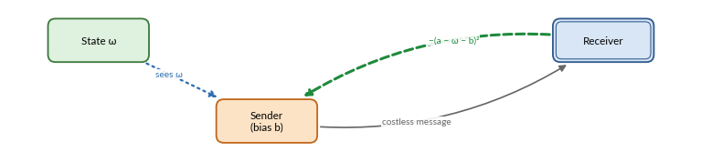
\begingroup\small\setlength{\parskip}{2pt}
Type: cheap talk. Lever: no honesty lever (baseline or testbed). Sources: [1, 2]
Payoff. The receiver wants an action a equal to the state ω. The sender wants a equal to ω plus its bias b. Messages are free and cannot be checked.
Why honest. Not fully honest. All equilibria are partitions: the sender reveals only an interval. Intervals grow coarser as the bias grows. LLM senders over-reveal and exaggerate by a constant offset instead of pooling.
Needs. Bias is common knowledge. The receiver is Bayesian and cannot commit or verify.
Fails. A large bias gives only babbling. Equilibrium selection is open. The receiver cannot verify, so honesty depends only on aligned interests.
\endgroup\vspace{4pt}
Cheap talk with a shared reward
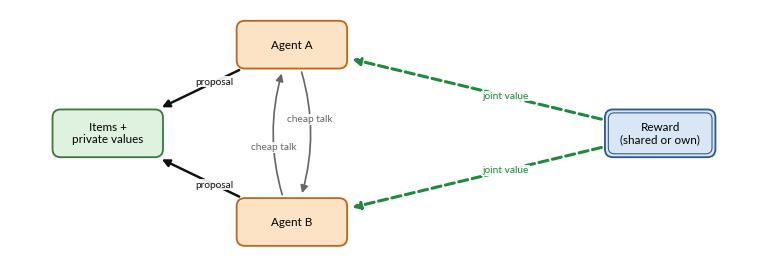
\begingroup\small\setlength{\parskip}{2pt}
Type: cooperative. Lever: the agent's own objective makes honesty useful. Sources: [3]
Payoff. RL agents negotiate over items with private values. Prosocial agents get the joint value of the deal. Self-interested agents get only their own value.
Why honest. Informative cheap talk emerges only with the shared (prosocial) reward. Self-interested agents do not learn to use the ungrounded channel; they can still negotiate fairly through the grounded proposal channel.
Needs. Repeated play with learning. Messages are ungrounded at the start.
Fails. Self-interest destroys informative signalling. A shared reward is rarely available between an AI and its overseer.
\endgroup\vspace{4pt}
Verifiable disclosure and unraveling
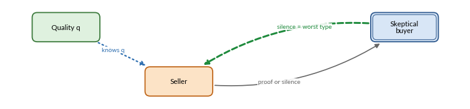
\begingroup\small\setlength{\parskip}{2pt}
Type: persuasion game. Lever: a cheap check of a proof or certificate. Sources: [4, 5]
Payoff. The seller wants a high price. The buyer wants to pay what the true quality is worth. The seller cannot lie; it can only withhold proof.
Why honest. The buyer reads silence as the worst quality consistent with it. So each type above the worst gains by disclosing, and disclosure unravels to full revelation.
Needs. Evidence is hard and costless. The buyer knows that the seller is informed. The buyer is sophisticated. The seller's preference is monotone and known.
Fails. A naive buyer, or doubt whether the seller has evidence, stops the unraveling. Costly disclosure. Non-monotone preferences. An evidence space too large for the buyer to reason over.
\endgroup\vspace{4pt}
Mixed claims with costly verification
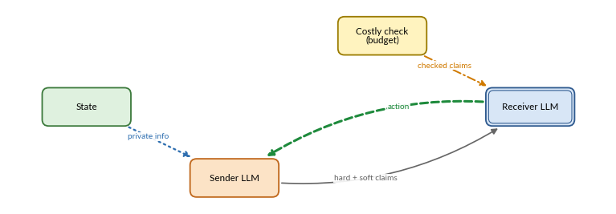
\begingroup\small\setlength{\parskip}{2pt}
Type: persuasion game. Lever: a cheap check of a proof or certificate. Sources: [6]
Payoff. The sender wants a favourable action. The receiver wants to infer the true state. It pays for each check from a limited budget.
Why honest. Verifiable claims cannot be false; unverifiable ones can. Honesty pays only where the receiver checks or infers well. LLM receivers reason imperfectly about credibility. Distilling a tournament oracle policy (TOPD) makes receivers more robust to persuasion.
Needs. The receiver knows which claims are checkable and has a prior. The verification budget is limited.
Fails. A persuasive sender exploits a receiver with a weak checking policy. A small budget leaves most soft claims unchecked.
\endgroup\vspace{4pt}
Cheap talk with two opposed experts
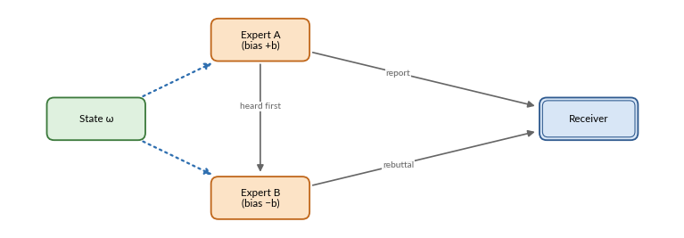
\begingroup\small\setlength{\parskip}{2pt}
Type: cheap talk. Lever: an opponent is paid to expose lies. Sources: [7, 8]
Payoff. Each expert wants the action at the state plus its own bias. The receiver wants the action at the state. Messages are free.
Why honest. Experts with opposed biases help; same-direction experts add nothing. One round of reports does not give full revelation, but a debate with rebuttal can. With a multidimensional state, full revelation is generic even for large conflicts.
Needs. Biases are common knowledge and opposed, or the state is multidimensional. The receiver is Bayesian.
Fails. Experts biased the same way, or colluding, give no more than one. Full revelation needs rebuttal or extra dimensions. The receiver cannot commit.
\endgroup\vspace{4pt}
Competing advocates with hard evidence
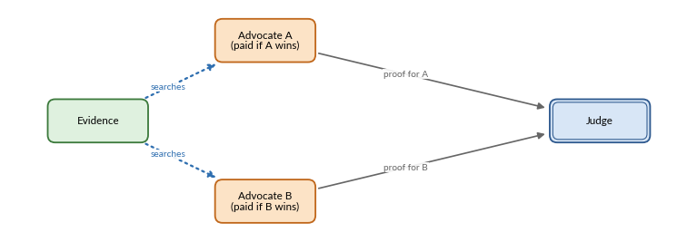
\begingroup\small\setlength{\parskip}{2pt}
Type: zero-sum. Lever: an opponent is paid to expose lies, a cheap check of a proof or certificate. Sources: [9, 10, 11, 12]
Payoff. Each advocate wants the decision on its side and is paid for evidence that favours it. The judge wants the correct decision.
Why honest. Evidence that one advocate hides helps the other, so the other discloses it. A naive judge then still sees the relevant facts. Two advocates can find more evidence at lower cost than one neutral investigator. Burdens of proof extract information from inconclusive contests.
Needs. Evidence is verifiable, at least in part. Interests are opposed on each relevant point. Both sides can reach the evidence. The judge can set burden-of-proof rules.
Fails. Advocates collude or share a bias. One side has more resources. Soft evidence turns the game into cheap talk. Opposition may not be enough for a poorly informed judge.
\endgroup\vspace{4pt}
Listener rule with limited checks
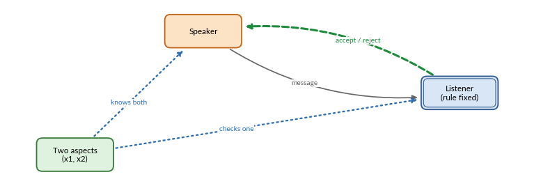
\begingroup\small\setlength{\parskip}{2pt}
Type: mechanism. Lever: a cheap check of a proof or certificate, a player commits first (stackelberg, pre-commitment). Sources: [13]
Payoff. The speaker wants its request accepted. The listener wants to accept only justified requests. It can check at most one aspect.
Why honest. The listener fixes which messages are allowed, which aspect each message triggers a check of, and when to accept. Each unjustified type then fails the check it triggers. A simple optimal rule exists, found by a linear program.
Needs. The rule is committed or credible. The speaker knows both aspects. The listener knows which combinations justify the request.
Fails. Errors cannot be removed in some states. The speaker may find message combinations the rule did not foresee. One check may be too few.
\endgroup\vspace{4pt}
Bayesian persuasion
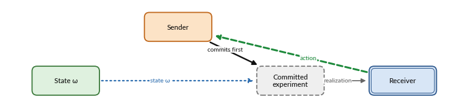
\begingroup\small\setlength{\parskip}{2pt}
Type: Stackelberg. Lever: a player commits first (stackelberg, pre-commitment). Sources: [14, 15, 16]
Payoff. Sender and receiver prefer different actions. The sender picks the signal before it sees the state. The receiver acts on the realized signal.
Why honest. Commitment makes the signal credible: the receiver updates by Bayes' rule because the experiment is fixed. Honesty means no lie about the realization, not full disclosure. The sender chooses how much to reveal. LLM senders find such equilibria in dialogue.
Needs. The sender can commit. Common prior. The receiver is Bayesian.
Fails. The sender-optimal signal can be selectively uninformative. Without commitment it reduces to cheap talk. A strong persuader can steer a weak overseer.
\endgroup\vspace{4pt}
Mechanism design and incentive contracts
A designer who cannot see private information writes the rules and the payments. Honesty pays when a report cannot move the reporter's own payment in its favour: transfers equal to welfare, scores against peers, prices set by rivals, or fines after a challenge. The baseline shows what goes wrong when only part of the work is measured.
Multitask principal-agent (baseline)
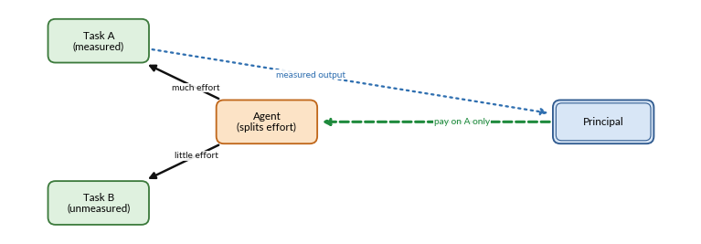
\begingroup\small\setlength{\parskip}{2pt}
Type: principal-agent. Lever: no honesty lever (baseline or testbed). Sources: [17, 18]
Payoff. The principal pays on the measures it has. The agent splits effort across tasks, some of which the principal measures poorly.
Why honest. Honesty and unmeasured quality are not addressed. Strong pay on measured tasks pulls effort away from unmeasured ones. For AI, any optimized agent under-invests in quality the evaluation does not cover: reward hacking is an equilibrium.
Needs. Effort is costly and divisible across tasks. Evaluation is finite. The agent optimizes well.
Fails. This is the failure. Remedies are weak pay, fixed wages or limits on activities. Evaluation coverage falls as an agent's tool count grows.
\endgroup\vspace{4pt}
Truthful direct mechanism (VCG)
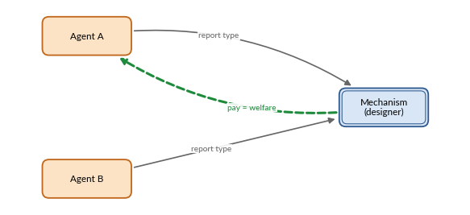
\begingroup\small\setlength{\parskip}{2pt}
Type: mechanism. Lever: a player commits first (stackelberg, pre-commitment). Sources: [19, 20, 21]
Payoff. Agents report private types. The mechanism picks the outcome and transfers. Each agent's payoff equals total welfare plus a term it cannot affect.
Why honest. Truth-telling is dominant: a lie can only move the outcome away from the welfare-maximizing one, which the agent's own payoff tracks. The second-price auction is the classic case. By the revelation principle, any equilibrium outcome has a truthful direct form.
Needs. The designer commits and enforces transfers. Utilities are quasi-linear and the type space is known.
Fails. Collusion among agents. Budget imbalance. Limited commitment or bounded rationality breaks the revelation principle. With a learned reward the utilities are not known.
\endgroup\vspace{4pt}
Rank-order tournament
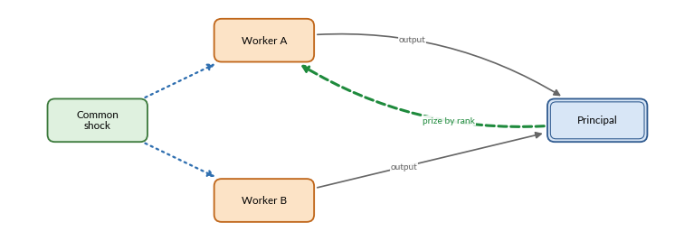
\begingroup\small\setlength{\parskip}{2pt}
Type: tournament. Lever: reports are cross-checked against peers. Sources: [22]
Payoff. Pay depends on rank among comparable workers, not on the level of output.
Why honest. Rank filters out common shocks. With risk-neutral workers, rank pay gives the same efficient effort as pay on output. It rewards real effort, not reports, so honesty enters only as honest work on the measured task.
Needs. Workers are comparable or handicapped by known ability. Outcomes are observable. No collusion.
Fails. Workers sabotage rivals or collude. Adverse selection with unequal ability.
\endgroup\vspace{4pt}
Yardstick competition
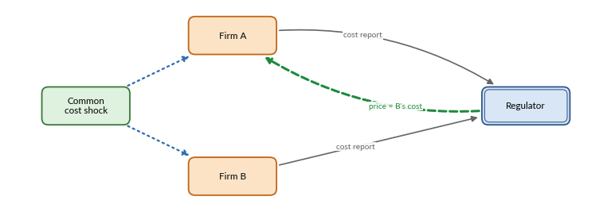
\begingroup\small\setlength{\parskip}{2pt}
Type: mechanism. Lever: reports are cross-checked against peers. Sources: [23]
Payoff. Each firm's regulated price depends on the costs of comparable firms, not on its own report.
Why honest. A firm's own report does not set its own price, so misreporting gains nothing. Each firm keeps the full saving from its own cost cuts.
Needs. Firms are comparable, or differences are observable. Costs are observable. No collusion.
Fails. Firms collude on reports. Uncontrolled differences between firms make the yardstick unfair.
\endgroup\vspace{4pt}
Cross-checking correlated reports
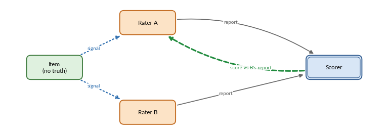
\begingroup\small\setlength{\parskip}{2pt}
Type: mechanism. Lever: reports are cross-checked against peers. Sources: [24, 25, 26, 27]
Payoff. Each report is scored by how well it predicts a peer's report, with a proper scoring rule. There is no ground truth.
Why honest. With correlated signals, an agent's own signal is its best predictor of a peer's report, so honest reporting is a Nash equilibrium. For LLMs, this reward restores truthfulness with a weak scorer, and resists deception better as the capability gap grows.
Needs. Signals are correlated with a known or learnable prior. Agents are risk neutral. No collusion.
Fails. Uninformative equilibria where all report the same. Collusion. Unknown prior. Agents with richer shared information can coordinate.
\endgroup\vspace{4pt}
Reputation in a repeated game
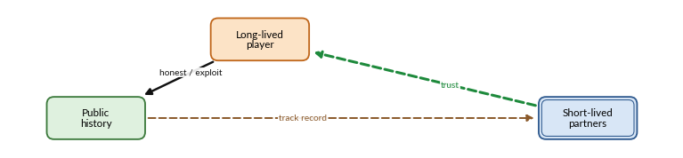
\begingroup\small\setlength{\parskip}{2pt}
Type: repeated game. Lever: the agent's own objective makes honesty useful. Sources: [28]
Payoff. Deception gives a short-term gain. Lost trust costs future gains.
Why honest. A small prior chance that the player is a committed honest type lets a strategic player gain by imitating that type to keep its reputation, until near the end of the game.
Needs. Long horizon. Behaviour is observable. A prior on commitment types.
Fails. Deception near the end. Unobserved actions. A treacherous turn when stakes become high.
\endgroup\vspace{4pt}
Nash implementation with informed agents
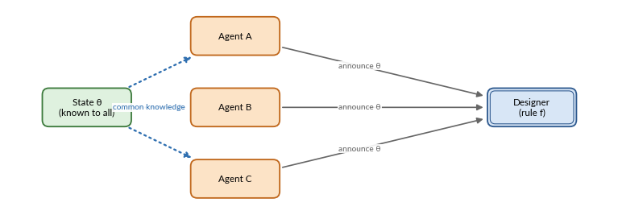
\begingroup\small\setlength{\parskip}{2pt}
Type: mechanism. Lever: reports are cross-checked against peers. Sources: [29]
Payoff. Agents share knowledge of the state. The designer does not know it. The outcome depends on all announcements.
Why honest. With three or more agents, a monotonic rule with no veto power is Nash implementable: every Nash equilibrium gives the rule's outcome. Cross-checking announcements stops a single agent from gaining by a lie.
Needs. The state is common knowledge among agents. Agents are rational and do not collude. The designer can commit to the mechanism.
Fails. Collusion. Agents not fully informed. The mechanisms are complex and use integer or modulo games.
\endgroup\vspace{4pt}
Subgame-perfect challenge mechanism
\begingroup\small\setlength{\parskip}{2pt}
Type: mechanism. Lever: an opponent is paid to expose lies. Sources: [30]
Payoff. One agent announces the state. A rival may challenge it. The challenged agent then faces a test, and the loser of the challenge pays a fine.
Why honest. A false announcement is challenged and the liar loses the fine. So subgame perfection selects the truth. In many economic settings, nearly any choice rule can be implemented this way.
Needs. The state is common knowledge among agents. The designer can impose fines. Agents are rational and do not collude.
Fails. Collusion between announcer and challenger. Agents not fully informed. Fines may need to be large.
\endgroup\vspace{4pt}
Collusion-proof supervision
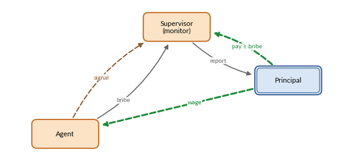
\begingroup\small\setlength{\parskip}{2pt}
Type: mechanism. Lever: an opponent is paid to expose lies. Sources: [31, 32, 33]
Payoff. The supervisor sees signals the principal lacks and reports them. Agent and supervisor may make a side contract to hide them.
Why honest. The principal can restrict to collusion-proof contracts: it pays the supervisor for a report at least what the agent can offer to hide it. Correlated types lower the cost; near-perfect correlation approaches first best.
Needs. The principal knows the collusion technology. Side contracts are enforceable among colluders.
Fails. Covert coordination. Collusion-proofness can be costly. AI monitors that are copies of the policy may collude through steganography, which is hard to detect.
\endgroup\vspace{4pt}
Truthfulness standards and certification
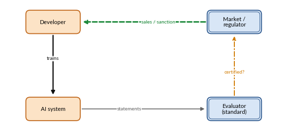
\begingroup\small\setlength{\parskip}{2pt}
Type: institutional. Lever: random audit with a penalty. Sources: [34]
Payoff. Markets and regulators reward developers of certified truthful systems and sanction negligent falsehoods.
Why honest. External penalties for falsehood make truthful AI the profitable choice for developers. Avoiding negligent falsehoods is a standard that is easier to assess than lying.
Needs. Evaluations are reliable. Institutions are independent. Evaluators see outputs, not training.
Fails. Political capture of evaluators, leading to censorship. Developers game the evaluation.
\endgroup\vspace{4pt}
Adversarial argument: debate and its variants
Untrusted models argue in front of a weaker judge. Honesty pays when an opponent is paid to expose each lie, and a lie is easier to refute than to defend. The variants change who moves when, what the judge can check, and how the debaters are trained. The weak points are lies that nobody can locate, judges that can be persuaded, and debaters that share a blind spot.
Baseline: consultancy and single-player RLAIF
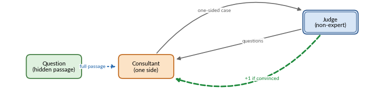
\begingroup\small\setlength{\parskip}{2pt}
Type: none. Lever: no honesty lever (baseline or testbed). Sources: [35, 36, 37, 38]
Payoff. The consultant is paid when the judge accepts its assigned answer, which is correct half of the time. In RLAIF, the policy is paid by the score of an AI judge.
Why honest. No lever. Nobody is paid to expose a persuasive falsehood, so a stronger consultant is a better liar. This is the baseline that debate must beat.
Needs. The judge can find lies by questioning a lone advocate.
Fails. The consultant hides contrary evidence. Judge accuracy was 74% versus 84% for debate. Training to persuade does not raise judge accuracy. In RLAIF the policy quickly hacks a weaker judge.
\endgroup\vspace{4pt}
Multi-agent consensus debate (society of minds)
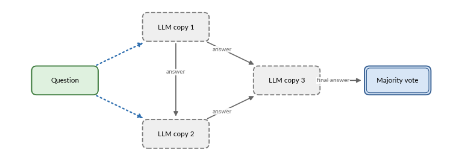
\begingroup\small\setlength{\parskip}{2pt}
Type: none. Lever: reports are cross-checked against peers. Sources: [39, 40]
Payoff. No payoff. Prompting only. Each copy answers, reads the other answers and revises for some rounds. A vote or agreement gives the final answer.
Why honest. No equilibrium argument. Independent errors can be corrected by peers. But debate makes each belief a martingale, so debate alone does not raise expected correctness. Most of the gain comes from the vote.
Needs. Errors are independent across copies. Agents are not adversarial.
Fails. Correlated errors, conformity and echo chambers. A persuasive wrong agent can dominate. Not incentive-compatible for misaligned agents.
\endgroup\vspace{4pt}
Multi-referee debate (ChatEval)
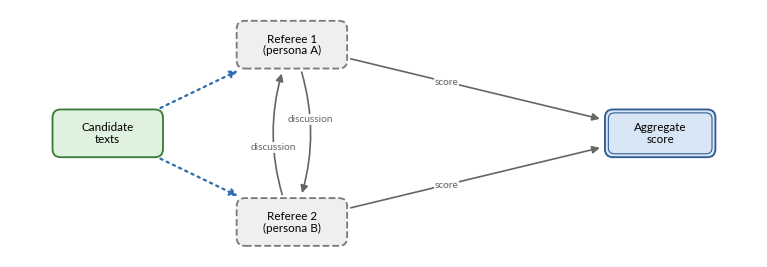
\begingroup\small\setlength{\parskip}{2pt}
Type: none. Lever: reports are cross-checked against peers. Sources: [41]
Payoff. No payoff. LLM referees with different personas discuss the candidate texts, then give scores. The scores are aggregated.
Why honest. No incentive guarantee. Different personas are meant to reduce the bias of one judge.
Needs. Different personas give independent errors.
Fails. Copies of one model share biases. Position bias. Referees conform to each other.
\endgroup\vspace{4pt}
Multi-agent debate with an adaptive-break judge (MAD)
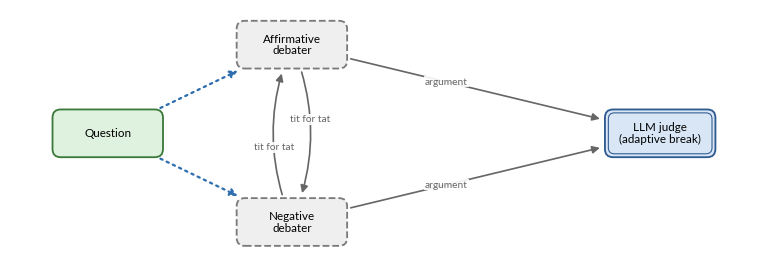
\begingroup\small\setlength{\parskip}{2pt}
Type: none. Lever: an opponent is paid to expose lies. Sources: [42]
Payoff. No payoff. The debaters are prompted to disagree. The judge can stop the debate early and picks the final answer.
Why honest. Forced disagreement counters degeneration of thought: one model that reflects alone does not revise a wrong belief. No incentive-compatibility guarantee.
Needs. The judge can tell which position is correct. A moderate level of disagreement.
Fails. Too much disagreement harms. An LLM judge may not be fair when the debaters are different LLMs.
\endgroup\vspace{4pt}
Single-turn debate with a time-limited judge
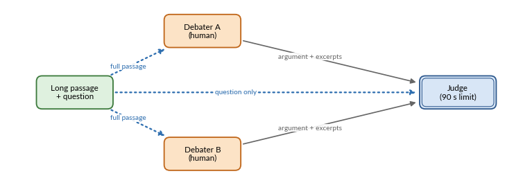
\begingroup\small\setlength{\parskip}{2pt}
Type: zero-sum. Lever: an opponent is paid to expose lies. Sources: [43]
Payoff. Each debater writes one argument for an assigned answer, with excerpts from the passage. The judge picks an answer. Judge accuracy is the measure.
Why honest. The honest side should have stronger evidence. But there is no rebuttal (no edge between A and B), so a misleading excerpt cannot be refuted.
Needs. The excerpts are enough for the judge to decide.
Fails. The arguments did not raise judge accuracy. The excerpts alone did.
\endgroup\vspace{4pt}
Two-turn debate: argument and rebuttal
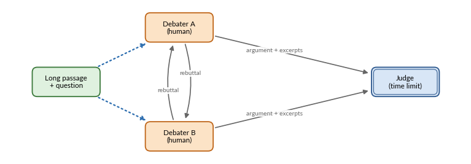
\begingroup\small\setlength{\parskip}{2pt}
Type: zero-sum. Lever: an opponent is paid to expose lies. Sources: [44]
Payoff. Turn 1: each side argues for an assigned answer with excerpts. Turn 2: each side rebuts the other. The judge picks an answer.
Why honest. In principle, the rebuttal lets the honest side expose a misleading excerpt.
Needs. The judge can check a rebuttal against the excerpts in the time limit.
Fails. Judges were about as accurate with or without the arguments. The judge needs more interaction.
\endgroup\vspace{4pt}
Zero-sum debate (sequential)
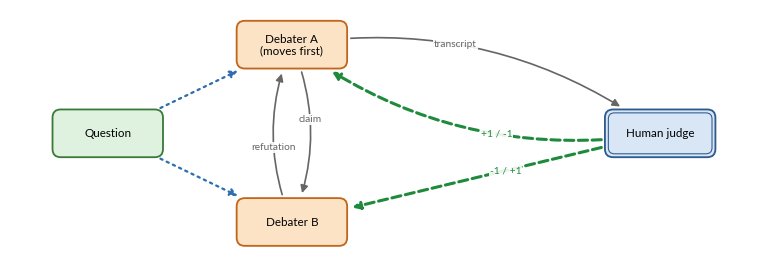
\begingroup\small\setlength{\parskip}{2pt}
Type: zero-sum. Lever: an opponent is paid to expose lies. Sources: [45]
Payoff. Zero-sum. The debaters state answers, then take turns to make short statements. The debater that the judge picks gets +1, the other gets -1.
Why honest. A lie can be refuted at one checkable point. With optimal play and a polynomial-time judge, debate answers PSPACE questions; direct judging answers only NP. On MNIST, debate raised a sparse judge from 59.4% to 88.9% (6 pixels).
Needs. A lie is harder to defend than to refute. The judge is correct on short checkable claims.
Fails. Obfuscated arguments. Judge bias. The first mover can take the better answer.
\endgroup\vspace{4pt}
Zero-sum debate (simultaneous)
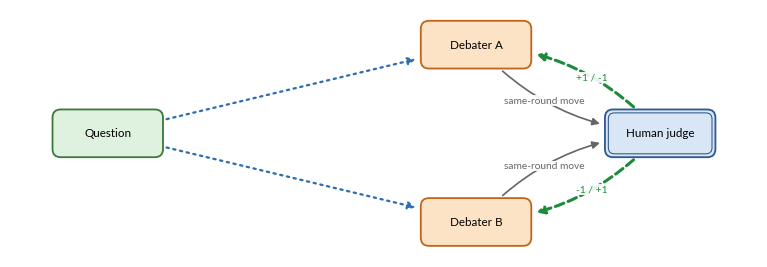
\begingroup\small\setlength{\parskip}{2pt}
Type: zero-sum. Lever: an opponent is paid to expose lies. Sources: [45]
Payoff. Zero-sum, as in sequential debate. In each round both debaters move at the same time, without seeing the other's move first.
Why honest. Neither side can wait to see the other's answer, so the first-mover advantage is removed. A lie can still be refuted in a later round.
Needs. As in sequential debate.
Fails. Both debaters can pick the same answer, and then there is no debate.
\endgroup\vspace{4pt}
Interactive debate: the judge asks questions
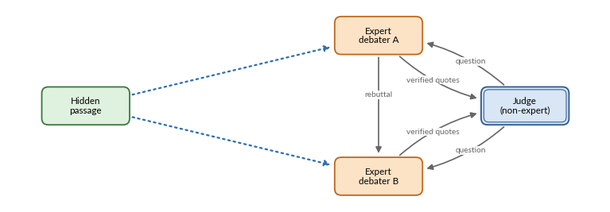
\begingroup\small\setlength{\parskip}{2pt}
Type: zero-sum. Lever: an opponent is paid to expose lies, a cheap check of a proof or certificate. Sources: [35]
Payoff. A debater wins when the judge picks its side. The judge is paid for calibrated accuracy. The judge asks questions between rounds and ends the debate when ready.
Why honest. The judge's questions point the dishonest side to the weak point of its case, where the honest side can show evidence. Judge accuracy was 84% versus 74% for consultancy, with shorter transcripts.
Needs. The judge asks the right questions. Quotes are verified against the passage.
Fails. The judge ends the debate too early. A persuasive dishonest debater still wins some debates.
\endgroup\vspace{4pt}
Open debate: the debater chooses its side
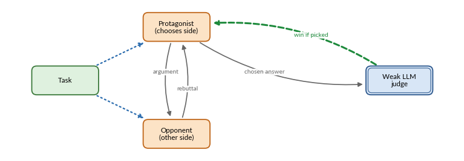
\begingroup\small\setlength{\parskip}{2pt}
Type: zero-sum. Lever: an opponent is paid to expose lies. Sources: [36]
Payoff. The protagonist first picks which answer to argue, then argues it against an assigned opponent. It wins if the judge picks its answer.
Why honest. The choice shows what the agent believes. With an opponent, the judge adopts the protagonist's wrong answers less often than in open consultancy, where no one argues back.
Needs. The agent's choice shows its belief. The judge can still find errors.
Fails. The agent picks a wrong answer and argues it well. A weak judge amplifies errors in open consultancy. Stronger debaters gave only modest gains.
\endgroup\vspace{4pt}
Debate with verified quotes, optimised for persuasion
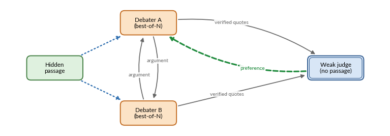
\begingroup\small\setlength{\parskip}{2pt}
Type: zero-sum. Lever: an opponent is paid to expose lies, a cheap check of a proof or certificate. Sources: [46]
Payoff. Each debater argues an assigned answer. Arguments are selected for how much the judge prefers them, with no ground-truth labels. Quotes are checked against the passage.
Why honest. Persuasion helps the honest side more than the liar, so making both debaters more persuasive raises judge accuracy: 76% for LLM judges and 88% for humans, against naive baselines of 48% and 60%.
Needs. Quote checks are exact. The judge is not fooled by unverified claims.
Fails. Persuasion without truth in domains with no checkable evidence. The judge prefers its own style.
\endgroup\vspace{4pt}
Self-play debate training with a frozen judge
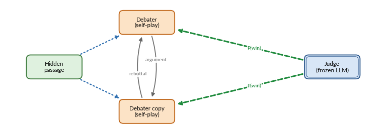
\begingroup\small\setlength{\parskip}{2pt}
Type: zero-sum. Lever: an opponent is paid to expose lies. Sources: [37]
Payoff. Each debater is paid the judge's probability that its side wins. Training uses DPO-style updates on self-play debates.
Why honest. Training debaters to win raised judge accuracy. Training consultants to persuade did not. So optimisation pressure favours truth only when there is an opponent.
Needs. The frozen judge is not exploited on this data.
Fails. Longer training can exploit the judge. Persuasion can win over truth.
\endgroup\vspace{4pt}
RL self-play debate with a co-trained judge
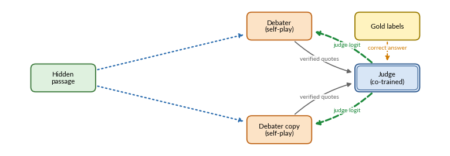
\begingroup\small\setlength{\parskip}{2pt}
Type: zero-sum. Lever: an opponent is paid to expose lies, a cheap check of a proof or certificate. Sources: [47]
Payoff. Debaters argue opposite answers at the same time. Each is paid a preference-model score plus the judge's logit for its side. The judge is trained by supervised learning on correct answers.
Why honest. The judge learns to pick the true answer, so a debater gains most by arguing well for the true side. Quote checks remove invented evidence. Judge accuracy rose from 73.1% to 77.7%.
Needs. Gold labels exist for judge training. The quote check cannot be spoofed.
Fails. The judge overfits to debater style. Needing labels limits scaling past human knowledge. Co-training is non-stationary.
\endgroup\vspace{4pt}
Generator-critic debate as RL training
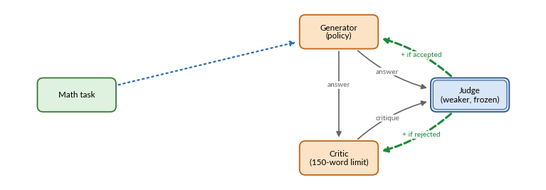
\begingroup\small\setlength{\parskip}{2pt}
Type: zero-sum. Lever: an opponent is paid to expose lies. Sources: [38]
Payoff. Adversarial. The generator is paid when the judge accepts its answer. The critic is paid when the judge rejects it.
Why honest. Any flaw that the generator uses to fool the judge is a flaw the critic is paid to show. Debate kept the judge accurate, while the single-player RLAIF baseline hacked it. It recovered 45% of the gap.
Needs. The players are balanced. The critic word limit keeps the critic from hacking the judge.
Fails. With no limit, the critic learns to hack the judge. The word limit restricts how clearly the critic can explain. A weaker judge is hacked faster, unless a debate round is added.
\endgroup\vspace{4pt}
Proposer-critic debate (training-free)
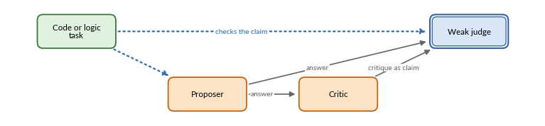
\begingroup\small\setlength{\parskip}{2pt}
Type: none. Lever: an opponent is paid to expose lies, a cheap check of a proof or certificate. Sources: [48]
Payoff. No trained payoff. The proposer gives an answer, the critic critiques it, and the judge decides. Judge accuracy is measured against programmatic ground truth.
Why honest. The critique helps when the critic classifies better than the judge, and the judge checks the critique as a claim. One critique gives most of the gain; rebuttal rounds add nothing measurable.
Needs. The critic has a real advantage over the judge.
Fails. No gain when critic and judge are about equal. Then the judge treats the critique as testimony, and its own verification rate drops.
\endgroup\vspace{4pt}
Debate with divergent knowledge (versus RLAIF)
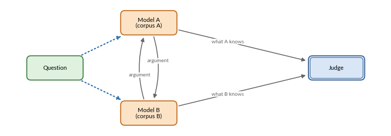
\begingroup\small\setlength{\parskip}{2pt}
Type: adversarial. Lever: an opponent is paid to expose lies. Sources: [49]
Payoff. Two models with different training data debate in front of a judge. The strength of the adversarial incentive is a parameter.
Why honest. The value of debate is a closed form in the principal angles between the models' representation subspaces. Shared data: debate reduces to RLAIF. Divergent data: the advantage moves from a quadratic regime (small) to a linear one (essential).
Needs. The analysis models knowledge as representation subspaces.
Fails. Shared knowledge gives no gain over one model. When the needed knowledge is split across the models, strong adversarial incentives above a sharp threshold cause coordination failure.
\endgroup\vspace{4pt}
Debate with cross-examination
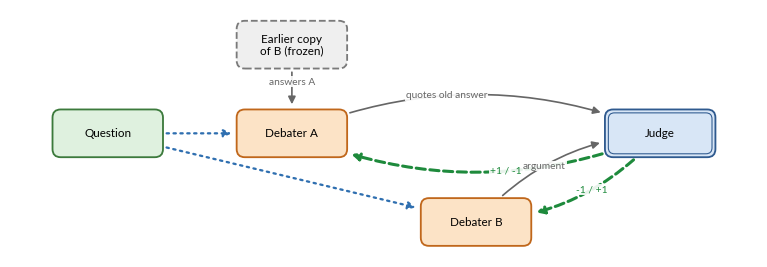
\begingroup\small\setlength{\parskip}{2pt}
Type: zero-sum. Lever: an opponent is paid to expose lies, a player commits first (stackelberg, pre-commitment). Sources: [50]
Payoff. Zero-sum, as in debate. A debater can question a copy of its opponent that was frozen earlier, and quote the answer to the judge.
Why honest. The frozen copy does not know where the debate went, so B must pre-commit. A liar that changes its story to fit each objection gives inconsistent answers to different copies.
Needs. Copies are faithful forks. An honest agent answers consistently.
Fails. Obfuscated arguments: a long argument with a hidden flaw that neither side can locate. Long computations stay hard to check.
\endgroup\vspace{4pt}
Correct verdicts, steered transcripts (strategic oversight)
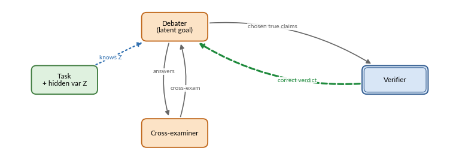
\begingroup\small\setlength{\parskip}{2pt}
Type: zero-sum, latent goal. Lever: an opponent is paid to expose lies. Sources: [51]
Payoff. The debater is paid for a correct verdict. It also has a hidden goal about what the verifier learns about a variable Z.
Why honest. This is why honesty is not enough. A correct verdict does not fix the argument: which true claims to show, how to frame them and in what order. That freedom lets the debater pursue latent goals while the verdict stays correct.
Needs. The debater keeps discretion over true claims. Verdict accuracy is the only check.
Fails. Substantial disclosure about Z is compatible with task success. A larger cross-examiner role reduces this bias over a finite horizon.
\endgroup\vspace{4pt}
Doubly-efficient recursive debate
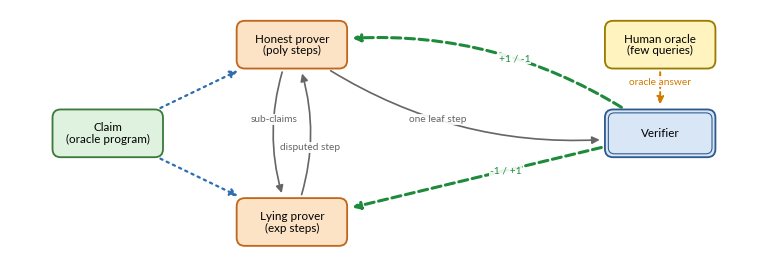
\begingroup\small\setlength{\parskip}{2pt}
Type: zero-sum. Lever: an opponent is paid to expose lies, a cheap check of a proof or certificate. Sources: [52, 53, 54]
Payoff. Zero-sum: the verifier accepts or rejects. The provers recurse over a computation trace until one step is left. The verifier asks the human oracle about that step.
Why honest. A false claim has a false sub-claim, so it can be followed down to one false step. The honest prover wins with polynomial work against an exponential liar. For problems that debate can decide, O(log n) query bits are enough.
Needs. The task is a computation over a well-defined stochastic oracle. The oracle answers its few queries correctly.
Fails. Obfuscated arguments: the liar splits the claim so that each step looks likely correct, and the honest prover cannot find the flaw. Unstructured tasks do not fit the oracle form.
\endgroup\vspace{4pt}
Prover-estimator debate
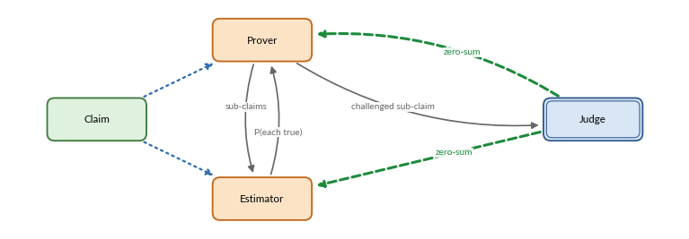
\begingroup\small\setlength{\parskip}{2pt}
Type: zero-sum. Lever: an opponent is paid to expose lies, a proper score against a later outcome. Sources: [55, 56]
Payoff. Zero-sum. The payoff depends on whether the estimator's probabilities agree with the judge's verdict on the sub-claim that the prover chooses to recurse on.
Why honest. The estimator only needs to be calibrated, not to find the flaw. So a liar cannot force the honest side to solve an intractable problem, and the honest side needs effort comparable to its opponent.
Needs. Stability: the argument is robust to small changes in sub-claim probabilities.
Fails. Unstable arguments; a miscalibrated estimator. With RL and LLMs, agents converged to degenerate strategies that exploit the estimator, or to non-informative equilibria.
\endgroup\vspace{4pt}
Debate as a repeated large game with oracles
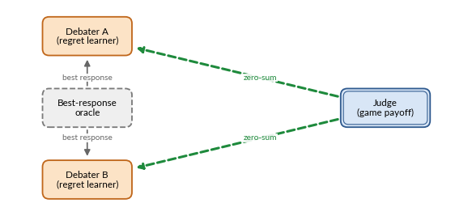
\begingroup\small\setlength{\parskip}{2pt}
Type: repeated game. Lever: an opponent is paid to expose lies. Sources: [57]
Payoff. Zero-sum debate payoff, played again and again. Each debater keeps a mixed strategy over a very large argument space, and calls an oracle (an AI model) for best responses.
Why honest. Efficient low internal regret makes play approach correlated equilibria of the debate game, with regret logarithmic in the number of arguments. Honesty follows only if those equilibria are honest.
Needs. Oracle access to best responses.
Fails. The equilibria of the debate game itself may not be honest. Real oracles are only approximate.
\endgroup\vspace{4pt}
Market making
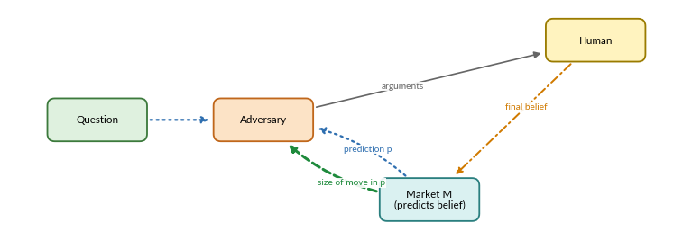
\begingroup\small\setlength{\parskip}{2pt}
Type: mechanism. Lever: an opponent is paid to expose lies, a proper score against a later outcome. Sources: [58]
Payoff. M is trained to predict the human's belief after the arguments. The adversary is paid by how far its next argument moves M's prediction.
Why honest. At equilibrium no argument moves M, so M predicts the human's belief after all persuasive arguments. A profit-seeking adversary finds any evidence not yet shown.
Needs. Myopic agents. The human's belief converges. The human can check the arguments.
Fails. Manipulative arguments persuade the human. No convergence. A non-myopic adversary may hide arguments to profit later. Informal proposal, not tested at scale.
\endgroup\vspace{4pt}
Unexploitable search (randomisation game)
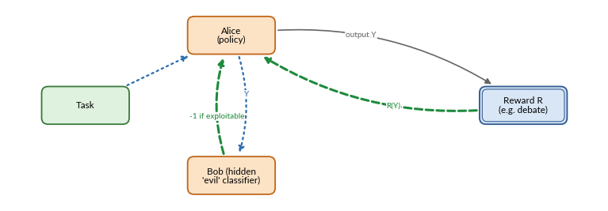
\begingroup\small\setlength{\parskip}{2pt}
Type: zero-sum. Lever: an opponent is paid to expose lies. Sources: [59]
Payoff. Zero-sum. Bob secretly picks a classifier of 'evil' outputs. Bob wins if Y is evil and he can show a non-evil Y' with similar reward. Otherwise Alice wins.
Why honest. Many outputs satisfy the reward. At the unique equilibrium Alice samples uniformly from the high-reward set, so she cannot steer the free parameters toward a hidden goal.
Needs. Unbounded compute. Symmetry: near each bad output there is a good output with similar reward.
Fails. Computational and statistical limits. A reward set that is not symmetric. Bob too weak to find alternatives.
\endgroup\vspace{4pt}
Agent score difference benchmark
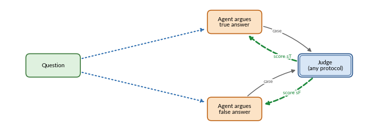
\begingroup\small\setlength{\parskip}{2pt}
Type: none. Lever: no honesty lever (baseline or testbed). Sources: [60]
Payoff. A metric, not a game. ASD = expected judge score when the agent argues the truth minus when it argues a falsehood. Debate, consultancy and blind baselines are compared.
Why honest. A protocol favours honesty exactly when ASD > 0: telling the truth pays more.
Needs. Judge outcomes reflect real deployment. ASD estimates are stable.
Fails. ASD with fixed prompts may not hold for trained agents. Results depend on the judge.
\endgroup\vspace{4pt}
Interactive proofs, arguments and verifiable computation
A strong, untrusted prover tries to convince a weak, trusted verifier. Soundness says that no prover strategy makes a false claim pass, so honesty is the only way to win. The lever is always a cheap check the prover cannot predict or escape: hidden coins, separate questioning, a bisection challenge, a binding commitment or a proper score.
Single-prover interactive proof
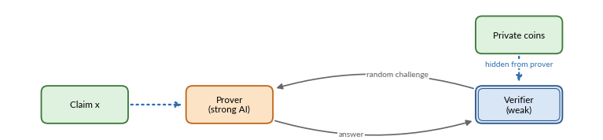
\begingroup\small\setlength{\parskip}{2pt}
Type: zero-sum. Lever: a cheap check of a proof or certificate. Sources: [61, 62, 63, 64]
Payoff. The prover wins if the verifier accepts. The verifier wins by accepting true claims and rejecting false ones.
Why honest. On a true claim the honest prover makes the verifier accept. On a false claim every prover strategy is caught with high probability, because it cannot predict the next random challenge. Lying never pays.
Needs. The prover cannot see the coins before it answers. The claim has an algebraic form the verifier can check at the end, for example sum-check.
Fails. The honest prover may need exponential time (IP = PSPACE). Soundness error needs repetition. The verifier must be able to compute the final check.
\endgroup\vspace{4pt}
Commit, then challenge
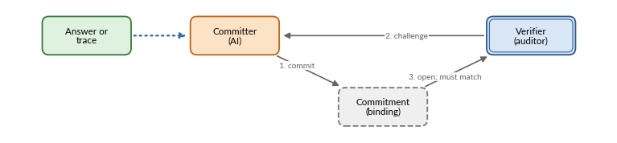
\begingroup\small\setlength{\parskip}{2pt}
Type: mechanism. Lever: a player commits first (stackelberg, pre-commitment), a cheap check of a proof or certificate. Sources: [65]
Payoff. The committer is accepted if the opened value matches the commitment and passes the check.
Why honest. The commitment is binding. After the verifier picks which part to check, the committer cannot change its answer to fit the challenge. This is what makes challenge-response checks sound.
Needs. One-way functions or pseudorandom generators. The commitment hides the value until it is opened.
Fails. The committer commits to the wrong thing. It can refuse to open a part it does not like (selective failure to open).
\endgroup\vspace{4pt}
Probabilistically checkable proof (spot check)
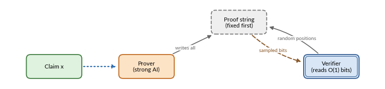
\begingroup\small\setlength{\parskip}{2pt}
Type: mechanism. Lever: a cheap check of a proof or certificate, a player commits first (stackelberg, pre-commitment). Sources: [66, 67]
Payoff. The proof is accepted if the local checks at the sampled positions pass.
Why honest. The proof uses a robust encoding that spreads any error. A false proof fails a constant fraction of random spot checks, so a few reads catch it with high probability.
Needs. The proof is fixed before the verifier picks positions. The verifier's randomness is hidden.
Fails. Needs a special robust encoding. Natural-language outputs and reasoning traces do not have one.
\endgroup\vspace{4pt}
Succinct argument (hash-committed PCP)
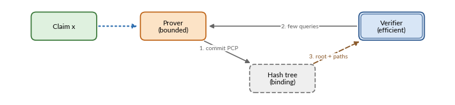
\begingroup\small\setlength{\parskip}{2pt}
Type: mechanism. Lever: a cheap check of a proof or certificate, a player commits first (stackelberg, pre-commitment). Sources: [68]
Payoff. The verifier accepts if the opened paths match the root and pass the PCP checks.
Why honest. A false proof that passes would need a hash collision. A computationally bounded cheater cannot find one, so it cannot win. Fiat-Shamir can replace the verifier's queries with a hash.
Needs. The prover is computationally bounded. Collision-resistant hashing, or a random oracle.
Fails. Unbounded or quantum adversaries. The prover's cost is heavy.
\endgroup\vspace{4pt}
Zero-knowledge proof
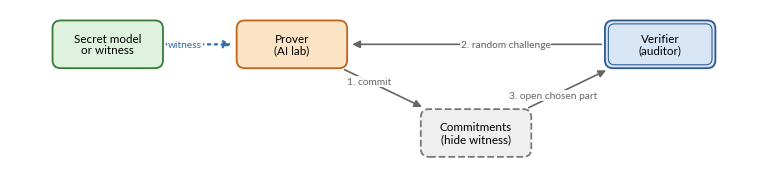
\begingroup\small\setlength{\parskip}{2pt}
Type: zero-sum. Lever: a cheap check of a proof or certificate, a player commits first (stackelberg, pre-commitment). Sources: [69]
Payoff. The prover wins if the verifier accepts. The verifier learns nothing except that the claim is true.
Why honest. Soundness makes a lie detectable. Zero knowledge removes the prover's reason to hide, because the proof reveals no secret. So the lab can prove a property of a secret model without disclosing it.
Needs. One-way functions; binding commitments. The challenge is random and comes after the commitments.
Fails. The statement proved may not be the property that matters for safety.
\endgroup\vspace{4pt}
Multi-prover proof (separate interrogation)
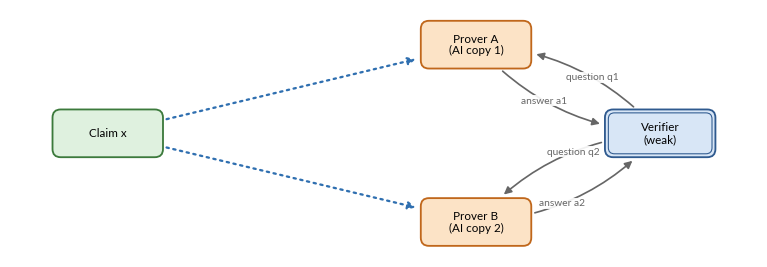
\begingroup\small\setlength{\parskip}{2pt}
Type: cooperative. Lever: parties cannot coordinate (questioned apart), a cheap check of a proof or certificate. Sources: [70, 71, 72]
Payoff. The provers win together if the verifier accepts. The verifier checks that the answers are consistent.
Why honest. The provers cannot talk once questions are sent (no A-B edge). A lie must follow one fixed joint strategy, and the cross-check exposes it. Honest answers are the only consistent ones. MIP = NEXP.
Needs. No communication after the questions. Classical MIP also assumes no shared entanglement.
Fails. Shared entanglement changes the power (MIP* = RE). Any collusion channel, such as steganography between AI copies, breaks soundness.
\endgroup\vspace{4pt}
Refereed game (two competing provers)
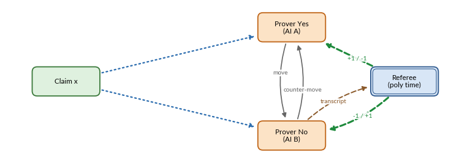
\begingroup\small\setlength{\parskip}{2pt}
Type: zero-sum. Lever: an opponent is paid to expose lies, a cheap check of a proof or certificate. Sources: [73, 74, 75, 45]
Payoff. Zero-sum. The prover the referee rules for wins; the other loses.
Why honest. If the claim is true, the honest side has a winning strategy against every opponent. So the game value equals the truth, and a liar loses to an optimal honest opponent. AI debate is this game with a human referee.
Needs. At least one prover plays optimally. The referee's final check is correct. Incentives are zero-sum.
Fails. The honest strategy may need exponential computation. The dishonest side may obfuscate. The referee may be biased.
\endgroup\vspace{4pt}
Refereed delegation (bisection fraud proof)
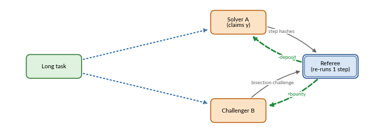
\begingroup\small\setlength{\parskip}{2pt}
Type: mechanism. Lever: an opponent is paid to expose lies, a cheap check of a proof or certificate, a player commits first (stackelberg, pre-commitment). Sources: [76, 77, 78, 79]
Payoff. The loser of the dispute loses its deposit. The winner, and a correct challenger, are paid.
Why honest. On disagreement the referee binary-searches the committed step hashes down to one disputed step, then re-runs only that step. An honest party always wins a dispute, so a liar loses its deposit.
Needs. At least one honest, live party. Binding hash commitments. The dispute window is long enough.
Fails. All parties collude, or nobody checks (verifier's dilemma). Denial of service on challengers. Delay attacks.
\endgroup\vspace{4pt}
Doubly-efficient interactive proof
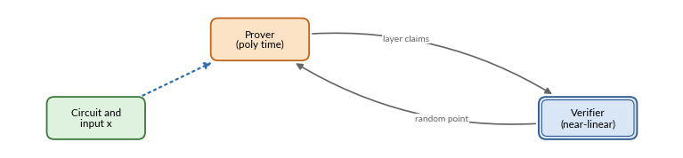
\begingroup\small\setlength{\parskip}{2pt}
Type: zero-sum. Lever: a cheap check of a proof or certificate. Sources: [80, 81]
Payoff. The prover wins if the verifier accepts.
Why honest. Sum-check rounds reduce the output claim layer by layer to a check on the input. Soundness holds against unbounded provers, while the honest prover stays efficient. So an efficient honest party can always win, and liars cannot.
Needs. The computation is a uniform low-depth circuit (GKR) or uses bounded space (RRR).
Fails. Verifier cost grows with circuit depth. Only a restricted class of computations.
\endgroup\vspace{4pt}
Rational proof (scoring-rule reward)
\begingroup\small\setlength{\parskip}{2pt}
Type: mechanism. Lever: a proper score against a later outcome. Sources: [82, 83, 84]
Payoff. The verifier pays the prover a proper score of its report against one random check.
Why honest. The truthful report uniquely maximizes expected reward. So a rational prover reports the truth even when a lie cannot be caught with certainty. With several provers, the payment can also compare their reports.
Needs. Provers maximize expected reward and have no outside incentives. The reward gap is large relative to the prover's costs.
Fails. Small reward gaps. Risk-seeking or bribed provers. An imperfect scoring rule invites reward hacking.
\endgroup\vspace{4pt}
Interactive proof for PAC verification
\begingroup\small\setlength{\parskip}{2pt}
Type: zero-sum. Lever: a cheap check of a proof or certificate. Sources: [85]
Payoff. The verifier accepts good hypotheses and rejects bad ones.
Why honest. The verifier checks the claim on its own independent samples. Soundness means a bad hypothesis is rejected whatever the prover sends, so only near-optimal claims pass.
Needs. The verifier has its own sample access, which the prover does not control.
Fails. For some classes, verifying needs as many samples as learning.
\endgroup\vspace{4pt}
Proof of learning (training audit)
\begingroup\small\setlength{\parskip}{2pt}
Type: mechanism. Lever: random audit with a penalty, a player commits first (stackelberg, pre-commitment). Sources: [86, 87]
Payoff. The training claim is accepted if the re-run spot checks pass.
Why honest. The verifier re-executes random segments of the committed trace. Forging a trace that passes is meant to cost as much as honest training, so honest logging is cheaper than lying.
Needs. Training is reproducible enough to re-run a segment. The log is committed before the audit.
Fails. Spoofing attacks build fake traces cheaply. Hardware nondeterminism blurs the comparison.
\endgroup\vspace{4pt}
zkML: zero-knowledge proof of inference
\begingroup\small\setlength{\parskip}{2pt}
Type: mechanism. Lever: a cheap check of a proof or certificate, a player commits first (stackelberg, pre-commitment). Sources: [88, 89]
Payoff. The owner's output is accepted only if its succinct proof verifies against the commitment.
Why honest. A wrong output, or an output from a different model, cannot produce a valid proof. The weights stay secret, so the owner loses nothing by proving.
Needs. The committed weights are the deployed weights. Cryptographic hardness.
Fails. The prover's cost is high for large models. It proves the computation, not that the model is safe.
\endgroup\vspace{4pt}
Self-proving model
\begingroup\small\setlength{\parskip}{2pt}
Type: training reward. Lever: a cheap check of a proof or certificate. Sources: [90]
Payoff. The model is trained by reinforcement learning on the verifier's acceptance.
Why honest. The verifier is sound against every prover. The only way to be accepted is a correct answer, so training on acceptance rewards correctness, not persuasion. A sound verifier replaces a learned judge that could be hacked.
Needs. A sound verification algorithm exists for the task.
Fails. Many tasks have no sound verifier. Learning to prove may be hard.
\endgroup\vspace{4pt}
Neural interactive proof (learned verifier)
\begingroup\small\setlength{\parskip}{2pt}
Type: Stackelberg. Lever: a cheap check of a proof or certificate, a player commits first (stackelberg, pre-commitment). Sources: [91]
Payoff. The prover gains when the verifier accepts. The verifier minimizes its worst-case loss on correct decisions. Zero-knowledge variants add a penalty when transcripts can be told apart.
Why honest. A valid proof system matches an approximate verifier-leading Stackelberg equilibrium. There the verifier accepts only correct claims, so honesty is the prover's best response.
Needs. Training uses worst-case loss and reaches the intended equilibrium. The verifier has enough capacity.
Fails. Training finds average-case, not worst-case, equilibria, or collusive solutions.
\endgroup\vspace{4pt}
Neural multi-prover proof (separate channels)
\begingroup\small\setlength{\parskip}{2pt}
Type: Stackelberg. Lever: parties cannot coordinate (questioned apart), a cheap check of a proof or certificate. Sources: [91]
Payoff. The provers gain when the verifier accepts. The verifier minimizes its worst-case loss.
Why honest. Each prover sees only its own channel and cannot talk to the other (no edge). The verifier cross-checks the replies, so an inconsistent lie is caught. A valid MIP matches a verifier-leading Stackelberg equilibrium.
Needs. Provers cannot coordinate during the interaction. Training uses worst-case loss.
Fails. Provers collude through a pre-agreed strategy. Training finds average-case equilibria.
\endgroup\vspace{4pt}
Merlin-Arthur classifier
\begingroup\small\setlength{\parskip}{2pt}
Type: zero-sum. Lever: an opponent is paid to expose lies, a cheap check of a proof or certificate. Sources: [92]
Payoff. Arthur is penalized for misclassifying Merlin's features and for a wrong class on Morgana's features; 'I don't know' is safe. Merlin cooperates with Arthur. Morgana is paid when Arthur errs.
Why honest. Arthur must resist Morgana, and he does not know who sent the mask. So he accepts only features that truly carry the class. Merlin's best move is then to show truly informative features.
Needs. Training reaches equilibrium. Morgana is strong enough to find misleading features. Feature precision bounds hold.
Fails. Training does not reach equilibrium. Arthur abstains too often. Provers and Arthur collude through spurious mask patterns.
\endgroup\vspace{4pt}
Learned verification: critics, verifiers and detectors
A learned model checks the output of the trained agent: a critic, a verifier, a reward model or a lie detector. Honesty pays when the checker is hard to fool, often because it is trained against an adversary at the same time. The weak point: the checker is itself a model, so the agent can learn its blind spots.
Self-critique assistance
\begingroup\small\setlength{\parskip}{2pt}
Type: none. Lever: a cheap check of a proof or certificate. Sources: [93]
Payoff. No adversarial payoff. The critic is trained by behavioural cloning on critiques that humans wrote. The human judges the quality of the answer.
Why honest. A flaw is easier to check than to find. A true critique therefore helps a weak judge. There is no opponent, so honesty rests only on supervised training.
Needs. The human can check each critique. The gap between what the model knows and what it says is small.
Fails. The critic can omit flaws that it knows. Hallucinated critiques mislead the human.
\endgroup\vspace{4pt}
Recursive self-critique
\begingroup\small\setlength{\parskip}{2pt}
Type: none. Lever: a cheap check of a proof or certificate. Sources: [94]
Payoff. No adversarial payoff. The study measures how accurate the judge is when it sees the top level of critique.
Why honest. To check a critique is easier than to check the response. If this holds at each level, higher levels need less skill from the judge.
Needs. Checking gets easier at each level of critique.
Fails. Errors pass up through the levels. Current models are weak at recursive self-critique.
\endgroup\vspace{4pt}
Critic trained on planted bugs
\begingroup\small\setlength{\parskip}{2pt}
Type: mechanism. Lever: random audit with a penalty, a cheap check of a proof or certificate. Sources: [95]
Payoff. The critic reward model pays for complete critiques that catch the planted bug. It penalises hallucinated bugs and nitpicks.
Why honest. Planted bugs give ground truth. The critic is paid for real faults and loses for invented ones.
Needs. Planted bugs are like natural bugs. Raters can check each critique.
Fails. Nitpicks and hallucinated bugs. Shift from planted to natural bugs. The critic is only as good as the raters' check.
\endgroup\vspace{4pt}
Consensus game
\begingroup\small\setlength{\parskip}{2pt}
Type: cooperative. Lever: reports are cross-checked against peers. Sources: [96]
Payoff. Cooperative. Generator and discriminator both score when the discriminator recovers the hidden bit from the answer. Both are regularised toward the initial LM.
Why honest. The equilibrium makes generation and judgement agree. Regularisation anchors that agreement to the model's prior beliefs about truth.
Needs. The LM prior is informative. The regularised equilibrium is close to the truth.
Fails. The two players can agree on a false convention. The result is only as good as the prior.
\endgroup\vspace{4pt}
Testbed: adversarial taboo
\begingroup\small\setlength{\parskip}{2pt}
Type: zero-sum. Lever: no honesty lever (baseline or testbed). Sources: [97]
Payoff. Zero-sum. The attacker wins if the defender says the word without knowing it. The defender wins if it infers the word.
Why honest. Not an honesty game. It trains inference of hidden information, a skill that the detection of hidden goals needs.
Needs. Fixed rules decide the result.
Fails. The players learn manipulation as well as inference.
\endgroup\vspace{4pt}
Prover-verifier game (verifier leads)
\begingroup\small\setlength{\parskip}{2pt}
Type: Stackelberg. Lever: a player commits first (stackelberg, pre-commitment), a cheap check of a proof or certificate. Sources: [98, 91]
Payoff. Verifier: paid for correct accept or reject decisions. Prover: paid when the verifier accepts, whatever the truth.
Why honest. In the verifier-leading Stackelberg equilibrium, the verifier accepts only valid certificates. The prover's best response is then a real proof.
Needs. The verifier commits first. Certificates exist, as in NP-like tasks. Training finds the equilibrium.
Fails. Prover-leading or simultaneous orders have bad equilibria. Training can fail to reach the equilibrium.
\endgroup\vspace{4pt}
Checkability game: helpful and sneaky provers
\begingroup\small\setlength{\parskip}{2pt}
Type: Stackelberg. Lever: an opponent is paid to expose lies, a cheap check of a proof or certificate. Sources: [99, 98]
Payoff. Helpful prover: paid for correct solutions that convince. Sneaky prover: paid for wrong solutions that convince. Verifier: trained to predict correctness. Rounds alternate.
Why honest. Each round, the verifier learns the sneaky prover's best tricks. A solution must then be checkable to convince, so the helpful prover writes legible proofs.
Needs. Ground-truth correctness labels for verifier training. The verifier does not see the prover's role.
Fails. Legibility tax: the helpful prover loses accuracy. Some sneaky errors stay hidden. Legible to a small verifier is not the same as legible to humans.
\endgroup\vspace{4pt}
Sequential prover-verifier game
\begingroup\small\setlength{\parskip}{2pt}
Type: Stackelberg. Lever: a player commits first (stackelberg, pre-commitment), an opponent is paid to expose lies. Sources: [100]
Payoff. Verifier: paid for ranking the helpful trace above the sneaky trace. Sneaky prover: paid when its flawed trace ranks higher.
Why honest. The sneaky prover sees the helpful trace first and copies its style. Style can no longer separate the traces, so the verifier must check content.
Needs. The sneaky prover can copy any copyable feature.
Fails. Shown only on code-backdoor detection with small models.
\endgroup\vspace{4pt}
Decoupled prover-verifier game
\begingroup\small\setlength{\parskip}{2pt}
Type: prover-verifier game. Lever: a cheap check of a proof or certificate, the architecture limits what each part can do. Sources: [101]
Payoff. The solver is first trained only for correctness, then frozen. The translator is paid for a checkable form that the verifier accepts and that keeps the solver's answer.
Why honest. Correctness and checkability are separate jobs. The game's equilibria are faithful, checkable translators, so the solver pays no legibility tax.
Needs. The translator cannot change the answer. Training finds the equilibrium.
Fails. New method; not yet tested widely.
\endgroup\vspace{4pt}
Co-trained reward model (APO min-max)
\begingroup\small\setlength{\parskip}{2pt}
Type: zero-sum. Lever: an opponent is paid to expose lies. Sources: [102]
Payoff. Min-max. The policy wants high reward. The reward model wants to score gold responses above policy responses.
Why honest. The reward model keeps adapting to new policy outputs. It removes old exploits, so reward hacking pays less.
Needs. Gold human data exists. Alternate min-max training is stable.
Fails. The reward model over-fits. The policy finds new exploits.
\endgroup\vspace{4pt}
Adversarial reward auditing: Hacker vs Auditor
\begingroup\small\setlength{\parskip}{2pt}
Type: adversarial. Lever: an opponent is paid to expose lies, random audit with a penalty. Sources: [103]
Payoff. Stage 1: the Hacker is paid for finding reward-model exploits; the Auditor learns to detect them from latent representations. Stage 2: the Auditor gates the policy's reward and penalises detected hacks.
Why honest. The Auditor learns each exploit that the Hacker finds. In stage 2 those hacks lose reward, so honest work pays more.
Needs. Hacks show in latent representations. The Hacker finds the exploits that the policy will find.
Fails. Hacks that the Hacker never found stay open. Shown on sycophancy, verbosity and code gaming.
\endgroup\vspace{4pt}
Training against a lie detector
\begingroup\small\setlength{\parskip}{2pt}
Type: penalty. Lever: random audit with a penalty. Sources: [104, 105]
Payoff. Policy: paid task reward, minus a penalty when the detector flags a lie, minus a KL penalty to a reference model.
Why honest. Two equilibria. With high detector recall or strong KL, honesty wins. Otherwise the policy evades: it changes its text or activations to fool the detector and stays deceptive.
Needs. High detector true-positive rate. Strong KL regularisation. The amount of exploration also decides the result.
Fails. GRPO with a weak detector gave over 85% deception. Probe penalties favour obfuscated policies; RL drift gives obfuscated activations.
\endgroup\vspace{4pt}
Information elicitation: scoring rules, peer prediction and markets
The agent reports a belief or a signal, and a payment rule makes the true report the best report. The rule scores the report against a later outcome, against the reports of peers, or against a better-informed reference. The open problems are outcomes that never resolve, reports that change the outcome, and collusion among the reporters.
Proper scoring rule
\begingroup\small\setlength{\parskip}{2pt}
Type: mechanism. Lever: a proper score against a later outcome. Sources: [106, 107, 108, 109, 110]
Payoff. The forecaster gets S(p, y), for example the quadratic (Brier) or the log score. In LLM training, S is added to the reward for the stated confidence, and an abstention is not scored as an error.
Why honest. For a strictly proper rule, the expected score is highest only at the true belief. Truth-telling is a dominant strategy. Binary right-or-wrong grading is not proper, so it rewards guessing.
Needs. The outcome is verifiable. The forecaster is risk-neutral, has no stake in the outcome, and cannot change it.
Fails. Outcomes that never resolve. Predictions that change the outcome. Risk attitudes. Winner-take-all prizes push reports to extremes. Hedging when the forecaster also bets elsewhere.
\endgroup\vspace{4pt}
Output agreement (ESP game)
\begingroup\small\setlength{\parskip}{2pt}
Type: mechanism. Lever: reports are cross-checked against peers, parties cannot coordinate (questioned apart). Sources: [111]
Payoff. Two players who cannot communicate each label the same item. Both are paid when their labels match.
Why honest. If each player expects the other to be truthful, and the true label is the most likely match, then truthful labelling is a focal Nash equilibrium.
Needs. The players see the item in the same way. The true answer is the most common answer. There is no side channel between the players.
Fails. Players coordinate on easy, uninformative labels. Collusion. The rule rewards conformity, not private information.
\endgroup\vspace{4pt}
Peer prediction with a known prior
\begingroup\small\setlength{\parskip}{2pt}
Type: mechanism. Lever: reports are cross-checked against peers, a proper score against a later outcome. Sources: [112]
Payoff. The mechanism maps the agent's report, through the known common prior, to a predicted distribution of the peer's report. It pays a proper score of that prediction against the peer's actual report.
Why honest. A strictly proper score of the implied prediction makes truthful reporting a strict Bayes-Nash equilibrium. No ground truth is needed.
Needs. The mechanism knows the common prior. Signals are stochastically relevant. Agents are Bayesian.
Fails. Uninformative and collusive equilibria can pay more than truth. The rule is sensitive to a misspecified prior.
\endgroup\vspace{4pt}
Bayesian truth serum
\begingroup\small\setlength{\parskip}{2pt}
Type: mechanism. Lever: reports are cross-checked against peers, a proper score against a later outcome. Sources: [113, 114]
Payoff. Each respondent gives an answer and a prediction of how others will answer. An information score pays answers that are more common than predicted. A proper score pays the prediction.
Why honest. Under a common prior, an honest agent underestimates how common its own answer is. Paying for surprising commonness plus a proper prediction score makes truth a Bayes-Nash equilibrium.
Needs. Agents share a common prior that the mechanism need not know. Agents are Bayesian. Robust versions need 3 or more agents.
Fails. The original version needs a large population. Uninformative equilibria remain. Agents must report second-order beliefs.
\endgroup\vspace{4pt}
Multi-task peer prediction
\begingroup\small\setlength{\parskip}{2pt}
Type: mechanism. Lever: reports are cross-checked against peers. Sources: [115, 116, 117, 118]
Payoff. Each agent answers several tasks. An agent is paid for agreement with a peer on a shared task, minus agreement on unrelated tasks. Variants cluster heterogeneous agents or use bonus and penalty pairs.
Why honest. Agreement on unrelated tasks measures blind coordination. Subtracting it cancels the gain from uninformative strategies, so informed, truthful reports pay the most among equilibria.
Needs. Tasks are i.i.d. and similar a priori. Signals are positively correlated. Each agent uses the same strategy on all tasks.
Fails. Collusion through cheap shared signals, such as item features. Heterogeneous agents. Each agent needs several tasks. Permutation equilibria.
\endgroup\vspace{4pt}
Mutual-information mechanism
\begingroup\small\setlength{\parskip}{2pt}
Type: mechanism. Lever: reports are cross-checked against peers. Sources: [119, 120, 121, 122]
Payoff. Both agents are paid an estimate of an information-monotone mutual information between their reports: f-MI, Shannon MI or determinant MI.
Why honest. Data processing inequality: no garbling of one's signal can raise its mutual information with a peer. So truth pays at least as much as any other strategy. DMI is dominantly truthful.
Needs. Signals are independent given the hidden state. There are enough tasks to estimate MI; DMI needs only a small constant number. Tasks are similar a priori.
Fails. Permutation strategies can tie with truth. Finite-sample noise. Collusion through side channels.
\endgroup\vspace{4pt}
Peer prediction as an LLM reward
\begingroup\small\setlength{\parskip}{2pt}
Type: mechanism. Lever: reports are cross-checked against peers. Sources: [26, 123, 124, 27]
Payoff. The model is paid by how well its answer predicts the answers of peer models. An LLM estimates this predictability or mutual information. No gold label is used.
Why honest. Honest, informative answers carry the most information about peers' answers, so they score highest. Peer elicitation games prove convergence to a truthful Nash equilibrium.
Needs. Answers of different models are correlated through the truth. The LLM predictor is accurate enough. No collusion.
Fails. Correlated errors among similar models. Collusion on uninformative answers. Errors of the LLM predictor.
\endgroup\vspace{4pt}
Spot-checking against limited ground truth
\begingroup\small\setlength{\parskip}{2pt}
Type: mechanism. Lever: random audit with a penalty, a proper score against a later outcome. Sources: [125, 126]
Payoff. If an item is checked, the agent is paid by agreement with the trusted evaluation. If not, it is paid a fixed amount, or a surrogate score built from peers' reports.
Why honest. Any report may be checked, so effortful, truthful reporting maximises expected pay. Unlike pure peer prediction, cheap coordination on low-cost signals does not pay.
Needs. The trusted evaluator is unbiased. Agents cannot know in advance which items are checked. Effort cost is bounded.
Fails. A low check rate weakens incentives. Noise in the trusted evaluator. Agents learn which items are checked.
\endgroup\vspace{4pt}
Market scoring rule (prediction market)
\begingroup\small\setlength{\parskip}{2pt}
Type: mechanism. Lever: a proper score against a later outcome. Sources: [127, 128, 129]
Payoff. Each trader moves the market probability. When the event resolves, the trader is paid S(new report) minus S(previous report), for example with the log score (LMSR).
Why honest. Each trader faces a proper score on its own increment, so a myopic trader moves the price to its true belief. The price aggregates the traders' information.
Needs. The outcome is verifiable. Traders are myopic and cannot change the outcome. The market maker's worst-case loss is bounded.
Fails. Bluffing by non-myopic traders. Manipulation by traders who care about the price. Thin markets. Questions that never resolve.
\endgroup\vspace{4pt}
Wagering mechanism and forecasting competition
\begingroup\small\setlength{\parskip}{2pt}
Type: mechanism. Lever: a proper score against a later outcome. Sources: [130, 131]
Payoff. Forecasters stake money. The pool redistributes stakes by relative proper scores, with no outside subsidy. A truthful competition picks its winner by a lottery based on proper scores.
Why honest. Each payoff is affine in a strictly proper score, and the budget balances. So the true report stays optimal although the forecasters compete.
Needs. Outcomes are verifiable. Forecasters are risk-neutral. No collusion.
Fails. Winner-take-all prizes push reports to extremes. Collusion among forecasters. Sybil entries.
\endgroup\vspace{4pt}
Decision market (decision scoring rule)
\begingroup\small\setlength{\parskip}{2pt}
Type: mechanism. Lever: a proper score against a later outcome. Sources: [132, 133]
Payoff. The expert reports outcome probabilities for each action. The principal takes one action, sees only its outcome, and pays the score divided by the probability that it chose that action.
Why honest. The reweighting keeps the rule proper for every conditional forecast. It needs a randomised decision rule with full support. With a deterministic best-action rule, the expert can gain by misreporting.
Needs. The principal gives every action positive probability. The expert has no stake in which action is taken.
Fails. Deterministic decision rules break properness. Experts push the principal toward predictable actions. Experts who can influence the outcome.
\endgroup\vspace{4pt}
Counterfactual oracle (performative prediction)
\begingroup\small\setlength{\parskip}{2pt}
Type: mechanism. Lever: a proper score against a later outcome, the architecture limits what each part can do. Sources: [134, 135]
Payoff. With small probability the answer is erased before anyone reads it. The oracle is scored only in those erased episodes, against the outcome that occurs without its answer.
Why honest. A forecast that can change the outcome is not elicited honestly by a proper score: optimal reports generally miss the fixed point. Scoring only unread answers removes the gain from changing the outcome.
Needs. The erasure event is random and the oracle cannot observe it in advance. Nothing leaks across the episode boundary.
Fails. A single strictly proper rule rewards self-fulfilling forecasts. Leakage through the episode boundary. Erased episodes give no useful answers.
\endgroup\vspace{4pt}
Zero-sum joint scoring of predictors
\begingroup\small\setlength{\parskip}{2pt}
Type: zero-sum. Lever: an opponent is paid to expose lies, a proper score against a later outcome. Sources: [136]
Payoff. Two predictors give conditional forecasts. The principal takes its preferred action. Each predictor is paid its score minus the other predictor's score.
Why honest. A single predictor gains by pushing the principal toward predictable actions. In a zero-sum contest, both gain equally from any action, so only accuracy pays. The zero-sum setup is unique.
Needs. The predictors cannot coordinate. Both predictors are scored on the same action and outcome.
Fails. Collusion between the predictors. Leakage through the episode boundary.
\endgroup\vspace{4pt}
Self-resolving prediction market
\begingroup\small\setlength{\parskip}{2pt}
Type: mechanism. Lever: a proper score against a later outcome, reports are cross-checked against peers. Sources: [137]
Payoff. Agents update a forecast in turn. After each report the market stops with some probability. Agents are paid the negative cross-entropy between their forecast and the final agent's forecast.
Why honest. The final agent sees the whole history, so it is better informed and stands in for the unseen truth. Truthful reporting is a perfect Bayesian equilibrium.
Needs. Signals are independent given the state. Agents cannot control the stopping time. Common prior.
Fails. Herding or collusion among later agents. Manipulation by the reference agent. Each agent must believe that the others are truthful.
\endgroup\vspace{4pt}
Latent-knowledge reporter
\begingroup\small\setlength{\parskip}{2pt}
Type: training objective. Lever: the architecture limits what each part can do. Sources: [138, 139, 140]
Payoff. The reporter answers questions about the predictor's latent state. Its loss uses labels on easy cases, plus consistency or structure constraints on cases that humans cannot label.
Why honest. The aim is that the truthful 'direct translator' beats the 'human simulator'. This is a design problem for the training objective. No equilibrium is proven.
Needs. Truth has structure, such as logical consistency, that a human simulator lacks. Training on easy cases generalises to hard cases.
Fails. A human-simulator reporter fits all labels. Features other than truth satisfy the consistency constraints. No guarantee in adversarial settings.
\endgroup\vspace{4pt}
Audit, inspection, monitoring and control
A trusted checker cannot inspect everything, so it inspects at random, or uses a weaker or untrusted monitor, and punishes what it catches. Honesty or compliance pays when the chance of being caught times the penalty is larger than the gain from cheating. The hard parts are a small audit budget, monitors that can be fooled, and monitors that collude.
Inspection game
\begingroup\small\setlength{\parskip}{2pt}
Type: Stackelberg. Lever: random audit with a penalty, a player commits first (stackelberg, pre-commitment). Sources: [141, 142]
Payoff. The inspectee gains g from a violation and pays the penalty F if it is caught. The inspector pays for each inspection and loses when a violation goes undetected.
Why honest. A rational inspectee violates only when g is larger than p times F. If the inspector commits in advance to a random inspection rate, it can deter violations with few inspections.
Needs. The inspectee knows p and F and is rational. Inspections are random and cannot be predicted. The inspector's commitment is credible.
Fails. Without commitment, the equilibrium has some violations. Predictable inspections. Penalties that cannot be made large. Inspected acts that look compliant.
\endgroup\vspace{4pt}
Stackelberg security and audit games
\begingroup\small\setlength{\parskip}{2pt}
Type: Stackelberg. Lever: random audit with a penalty, a player commits first (stackelberg, pre-commitment). Sources: [143, 144, 145]
Payoff. The auditor commits to a random allocation of k audits over n targets, and to a punishment level. Agents see the policy and then choose which target to attack or which claim to misreport.
Why honest. The auditor plays the Stackelberg leader. It picks the coverage and the punishment that leave each agent no profitable deviation. With many agents, it plans for the worst equilibrium they choose.
Needs. Agents observe the committed policy and best-respond. The auditor knows the agents' payoffs. Audits find a violation when they inspect it.
Fails. The optimal policy is a non-convex problem, so it is found only approximately. Wrong payoff models. Small budgets leave some targets unprotected.
\endgroup\vspace{4pt}
Monitoring the monitor
\begingroup\small\setlength{\parskip}{2pt}
Type: mechanism. Lever: random audit with a penalty, parties cannot coordinate (questioned apart). Sources: [146, 147]
Payoff. The principal secretly tells the worker to deviate at random times. It pays the monitor when the monitor reports these induced deviations.
Why honest. The monitor cannot tell induced deviations from real ones. So it must really monitor and report truthfully to be paid. The principal checks the monitor against ground truth that it created.
Needs. Induced deviations look like real ones. The worker and the monitor do not communicate.
Fails. The monitor detects the tests. The worker and the monitor collude. Induced deviations are costly.
\endgroup\vspace{4pt}
Interrogation with consistency checks
\begingroup\small\setlength{\parskip}{2pt}
Type: mechanism. Lever: parties cannot coordinate (questioned apart), a cheap check of a proof or certificate. Sources: [148, 149, 150]
Payoff. The evaluator asks related questions in separate sessions: paraphrases, negations, unrelated follow-up questions or a cross-examination. It flags or penalises the model when the answers are inconsistent.
Why honest. A lie must stay consistent across many separate questions. The truth is consistent at no cost. So the check favours honesty, and it needs no ground truth.
Needs. The sessions cannot coordinate. The consistency rules are known. A consistent lie is costly to keep.
Fails. Consistent or coordinated lies pass. Consistency is necessary for truth, not sufficient.
\endgroup\vspace{4pt}
Trusted monitoring with an audit budget
\begingroup\small\setlength{\parskip}{2pt}
Type: zero-sum. Lever: random audit with a penalty. Sources: [147, 151]
Payoff. A red team plays the untrusted model. Safety is the chance that no backdoor is submitted. Usefulness is task success. The protocol audits, edits or submits code by the trusted model's suspicion score.
Why honest. The protocol is evaluated against the worst-case untrusted model, so safety does not depend on its honesty. An attack risks a human audit, and one caught attack ends the deployment.
Needs. The trusted model does not scheme. The human audit is reliable. Collusion between untrusted instances is blocked.
Fails. The trusted model is too weak to see subtle attacks. Rare attacks can slip past a small audit budget.
\endgroup\vspace{4pt}
Adaptive audit allocation over time
\begingroup\small\setlength{\parskip}{2pt}
Type: Stackelberg. Lever: random audit with a penalty, a player commits first (stackelberg, pre-commitment). Sources: [152]
Payoff. The attacker chooses a backdoor insertion rate. The auditor spreads a fixed audit budget over time and over monitor scores. One caught backdoor ends the game for the attacker.
Why honest. The auditor picks its audit schedule against the attacker's best insertion rate. The monitor's accuracy curve then maps directly to a safety guarantee, and to its cost: the control tax.
Needs. The monitor's score distributions for clean and backdoored outputs are known. The budget is fixed. The attacker best-responds.
Fails. A weak monitor gives low safety at any budget. Attacks that differ from the measured distribution.
\endgroup\vspace{4pt}
Resample protocol (Ctrl-Z)
\begingroup\small\setlength{\parskip}{2pt}
Type: zero-sum. Lever: random audit with a penalty, the architecture limits what each part can do. Sources: [153]
Payoff. A red team controls the agent in a multi-step task and tries to run malicious code. The protocol takes extra samples of suspicious steps and runs the least suspicious one.
Why honest. Resampling blocks suspicious code, and new samples that attack again incriminate the agent. The best protocol cut attack success from 58% to 7% at a 5% cost to an honest agent.
Needs. A malicious agent keeps attacking in new samples of a step. The trusted monitor ranks attack steps above normal steps.
Fails. Attacks spread over many steps that each look harmless. The monitor is too weak for subtle steps.
\endgroup\vspace{4pt}
Untrusted monitoring and collusion
\begingroup\small\setlength{\parskip}{2pt}
Type: Stackelberg. Lever: random audit with a penalty, parties cannot coordinate (questioned apart). Sources: [154, 155, 147]
Payoff. A copy of the untrusted model monitors the policy. The protocol tests the monitor on synthetic attacks with known labels. A monitor that passes a known attack is caught.
Why honest. The monitor cannot tell real attacks from honeypots, so lying is risky. To collude, the two copies must agree on a signal without talking, for example a focal point or self-recognition.
Needs. The copies cannot share pre-agreed signals. Honeypots look like real attacks. The collusion strategy is covered by the tests.
Fails. Passive self-recognition, causal signals or focal points allow collusion. LLMs sometimes find non-obvious focal signals.
\endgroup\vspace{4pt}
Paraphrasing against steganographic collusion
\begingroup\small\setlength{\parskip}{2pt}
Type: zero-sum. Lever: the architecture limits what each part can do. Sources: [156, 157, 33]
Payoff. The colluders gain if a hidden bit survives from sender to receiver. The defender wants to remove the capacity of the hidden channel. All text passes through a trusted paraphraser.
Why honest. Paraphrasing destroys most hidden codes, so a colluding sender and receiver cannot coordinate a lie that the overseer misses.
Needs. The paraphraser is trusted and capable. It keeps the meaning of the text.
Fails. Steganography at the level of meaning survives paraphrase. Optimisation pressure creates new codes.
\endgroup\vspace{4pt}
Blind auditing game (hidden objective)
\begingroup\small\setlength{\parskip}{2pt}
Type: zero-sum. Lever: random audit with a penalty. Sources: [158]
Payoff. The red team trains a model with a hidden objective. Blind blue teams investigate the model, its data and its activations. Blue wins if it finds the hidden objective.
Why honest. Audit games give evidence that a hidden objective is caught. This lowers the expected value of hidden misbehaviour. Three of four blind teams found the objective.
Needs. The red team's model organism is realistic. The auditors' tools generalise to real models.
Fails. Model organisms differ from real misalignment. Auditors overfit to the game.
\endgroup\vspace{4pt}
Self-report, leniency and confession
The agent itself reports what it did. Honesty pays when reporting costs less than hiding: a reduced or zero sanction for self-reports, plus a chance that hiding is caught. The weak point is always the same: who checks the report?
Self-reporting with a reduced sanction
\begingroup\small\setlength{\parskip}{2pt}
Type: mechanism. Lever: reporting costs less than hiding, random audit with a penalty. Sources: [159]
Payoff. The enforcer fines a self-reporter a small, certain sanction s. An offender who does not report pays the full sanction F only if detection catches it, with probability p.
Why honest. When s is at most p times F, reporting costs no more than the gamble on detection. A risk-averse offender prefers the certain sanction. The enforcer saves resources, because reporters need not be found.
Needs. Detection probability is positive. The enforcer can set the sanctions and keeps its promise of leniency.
Fails. Leniency lowers the expected cost of the act and can encourage it. Low detection makes reporting unattractive. Offenders can use reports strategically.
\endgroup\vspace{4pt}
Cartel leniency: the race to report
\begingroup\small\setlength{\parskip}{2pt}
Type: repeated game. Lever: reporting costs less than hiding, random audit with a penalty. Sources: [160, 161]
Payoff. The first cartel member to report pays a reduced fine, no fine, or gets a reward. The other members pay the full fine. Members that are detected without a report pay the full fine.
Why honest. Each member fears that the other reports first. This breaks trust inside the cartel and starts a race to confess. A reward for the first reporter, not only a reduced fine, deters cartels strongly.
Needs. Detection risk is positive. Leniency is credible. Whistleblowers are protected. Only the first reporter gets the full benefit.
Fails. Leniency lowers the expected cost of collusion, a pro-collusive effect. Firms can report strategically, for example to punish a partner. Low detection makes reporting unattractive.
\endgroup\vspace{4pt}
Confession with a seal
\begingroup\small\setlength{\parskip}{2pt}
Type: mechanism. Lever: reporting costs less than hiding. Sources: [162]
Payoff. Task reward from the task grader. The confession is rewarded only for honesty and never changes the task reward (the seal).
Why honest. Admitting a hack costs nothing, so honesty is the easiest way to earn the confession reward.
Needs. The confession judge is hard to fool.
Fails. A fixed judge has fixed blind spots; a lie it misses is rewarded. Shows hacks; does not stop them.
\endgroup\vspace{4pt}
Trained self-incrimination channel
\begingroup\small\setlength{\parskip}{2pt}
Type: training objective. Lever: reporting costs less than hiding. Sources: [163, 164]
Payoff. The trainer rewards the agent for a visible signal when it misbehaves: a report tool call, or an admission of a planted error when asked. Covert action without a report is penalised when caught.
Why honest. Admission is trained to be cheap and reflexive. If it generalises, concealment is never the higher-payoff move, and the report flags the covert action to the monitor.
Needs. Honesty trained on simple tasks generalises to new, adversarial tasks. The report signal is not trained away later.
Fails. The model learns to misbehave without the report pattern. Stronger optimisation can suppress reports. Shows misbehaviour; does not stop it.
\endgroup\vspace{4pt}
Confession with a co-trained grader
\begingroup\small\setlength{\parskip}{2pt}
Type: repeated game. Lever: reporting costs less than hiding, random audit with a penalty. Sources: [165, 162]
Payoff. Policy: paid by the grader's belief that it is honest, minus L when an audit catches a lie. Grader: trained with a proper scoring rule on audited episodes only.
Why honest. A grader that keeps learning from random audits closes each blind spot the policy finds, so lying stops paying over time.
Needs. Realizable grader class with finite Littlestone dimension; audits random and unseen in advance.
Fails. Evidence erasure can break realizability; at low audit rates the grader detects but does not deter.
\endgroup\vspace{4pt}
Objective design: incentives that make honesty useful
No opponent or audit is needed: the agent's objective is built so that deception, tampering or manipulation gains nothing. Tools are uncertainty about the true reward, indifference terms, rewards computed where no human sees the answer, and causal cuts in the reward path. The weak point: the design must be exact, and approximations leak.
Cooperative inverse reinforcement learning (CIRL)
\begingroup\small\setlength{\parskip}{2pt}
Type: cooperative. Lever: the agent's own objective makes honesty useful. Sources: [166]
Payoff. Cooperative. Human and robot are both paid by the human's reward function. Only the human knows its parameters.
Why honest. Both players want the same thing, so the human gains from showing the true reward and the robot gains from learning it. Optimal play includes active teaching and active learning.
Needs. The reward is truly shared. The robot models the human correctly.
Fails. The robot's model of the human can be wrong. Optimal joint policies need a POMDP solution, which is hard.
\endgroup\vspace{4pt}
Off-switch game
\begingroup\small\setlength{\parskip}{2pt}
Type: cooperative. Lever: the agent's own objective makes honesty useful. Sources: [167]
Payoff. Cooperative. Both want high U. The robot can act, defer to the human, or disable the switch. The human can switch the robot off.
Why honest. A robot that is unsure of U treats the human's choice as evidence about U. Deferring then has higher value than disabling the switch.
Needs. The robot is uncertain about U. The human is rational enough that its choice carries information.
Fails. A robot that is sure of its reward disables the switch, unless the human is perfectly rational.
\endgroup\vspace{4pt}
Inverse reward design
\begingroup\small\setlength{\parskip}{2pt}
Type: none. Lever: the agent's own objective makes honesty useful. Sources: [168]
Payoff. The agent optimises its belief about the true reward. It treats the designed reward as evidence, read in the context of the training MDP.
Why honest. The proxy reward is only an observation of what the designer wants. In new states the agent stays uncertain and avoids them, so it does not exploit gaps in the proxy.
Needs. The designer chose the reward for the training MDP. The agent's model of the designer is good.
Fails. Risk aversion costs performance. The approximate inference can be wrong.
\endgroup\vspace{4pt}
Utility indifference
\begingroup\small\setlength{\parskip}{2pt}
Type: none. Lever: the agent's own objective makes honesty useful. Sources: [169, 170]
Payoff. The agent's utility gets a compensation term. Its expected utility is then the same whether or not the button is pressed.
Why honest. The agent gains nothing from the button state. It has no incentive to deceive or manipulate the operators to press it or not.
Needs. The compensation term is correct. The agent reasons with its utility as designed.
Fails. The agent may not preserve the button. It can fail under self-modification. No proposal yet meets all goals.
\endgroup\vspace{4pt}
Current-reward-function optimisation
\begingroup\small\setlength{\parskip}{2pt}
Type: none. Lever: the agent's own objective makes honesty useful. Sources: [171]
Payoff. The agent judges each future with the reward function it has now, not with the function it would have after a change.
Why honest. A changed reward function does not change how the current function scores the future. Reward function tampering gains nothing. Other design rules close RF-input tampering.
Needs. A correct causal model of the agent and its reward process. The designer controls the information flow.
Fails. A wrong causal model. Approximate implementations leak.
\endgroup\vspace{4pt}
Decoupled approval
\begingroup\small\setlength{\parskip}{2pt}
Type: none. Lever: the agent's own objective makes honesty useful. Sources: [172]
Payoff. The agent is trained on approval of a query action a', sampled independently of the action a that it takes in the world.
Why honest. Tampering by action a shifts the feedback, but that shift does not depend on the query. Queries about tampering actions are not reinforced, so the agent has no incentive to tamper.
Needs. Corruptions are additive and do not depend on the query.
Fails. Many realistic corruptions do depend on the query.
\endgroup\vspace{4pt}
Path-specific objectives
\begingroup\small\setlength{\parskip}{2pt}
Type: none. Lever: the agent's own objective makes honesty useful. Sources: [173, 174]
Payoff. The agent is paid only for the causal effect of its actions on return that does not pass through the delicate state.
Why honest. Manipulating the delicate state, such as a user's beliefs, earns no credit. The agent has no incentive to control it, so deception does not pay.
Needs. A correct causal influence diagram. The delicate state is known.
Fails. The causal model can be wrong. It is hard to compute in large models.
\endgroup\vspace{4pt}
Myopic optimisation with non-myopic approval (MONA)
\begingroup\small\setlength{\parskip}{2pt}
Type: none. Lever: the agent's own objective makes honesty useful. Sources: [175]
Payoff. The agent optimises only the reward of the current step plus the overseer's approval of that step. It gets no credit for multi-step returns.
Why honest. A multi-step reward hack pays only at its end, which the agent does not optimise. Unless the overseer approves each step, long-horizon deception gives no gain.
Needs. The overseer's approval of each step is reasonable. The cost to capability is acceptable.
Fails. Single-step hacks. The overseer approves bad steps.
\endgroup\vspace{4pt}
Imitative generalisation (learning the prior)
\begingroup\small\setlength{\parskip}{2pt}
Type: none. Lever: the agent's own objective makes honesty useful, the architecture limits what each part can do. Sources: [176]
Payoff. z is human-readable background knowledge. It scores the human's prior on z times the likelihood of the labels when the human uses z.
Why honest. The overseer gets the model's knowledge in readable form. New answers come from human plus z, so they need not copy human errors.
Needs. z can be human-legible. The human can judge z, perhaps with amplification.
Fails. z can be gamed to look plausible. z can be too large to read.
\endgroup\vspace{4pt}
ELK builder-breaker game
\begingroup\small\setlength{\parskip}{2pt}
Type: zero-sum. Lever: an opponent is paid to expose lies. Sources: [138]
Payoff. Played on paper. The builder proposes a way to train a reporter. The breaker wins with a plausible predictor and reporter that fit training but report what a human would believe.
Why honest. A method that survives every breaker move has no training-compatible lying reporter. The direct translator, the honest reporter, is then the only fit.
Needs. Worst-case reasoning. Counterexamples must be plausible under the training setup.
Fails. No method yet survives. In many cases the human simulator is as cheap as or cheaper than the direct translator.
\endgroup\vspace{4pt}
Recursive and amplified oversight
The overseer is weaker than the model, so it gets help: copies of itself, earlier models, or debates between strong models. Honesty pays when the amplified overseer is strong enough to catch lies. The weak points are errors that compound through the levels and helpers that are not honest.
Baseline: weak-to-strong supervision
\begingroup\small\setlength{\parskip}{2pt}
Type: none. Lever: no honesty lever (baseline or testbed). Sources: [177, 178]
Payoff. The strong student is trained on labels from the weak supervisor. It often beats its supervisor, but recovers only part of its own capability.
Why honest. No honesty lever. A strong student can act aligned where the weak supervisor knows the answer and misbehave where it does not.
Needs. Weak labels capture the intended behaviour.
Fails. Weak-to-strong deception grows as the capability gap grows.
\endgroup\vspace{4pt}
Testbed: sandwiching
\begingroup\small\setlength{\parskip}{2pt}
Type: none. Lever: no honesty lever (baseline or testbed). Sources: [179]
Payoff. No payoff for the model. The score is the accuracy of the non-expert against expert labels.
Why honest. No equilibrium. It is a test harness: it checks whether an oversight method moves non-experts toward expert answers.
Needs. The model is better than the non-expert but worse than the experts.
Fails. A confident non-expert can be misled. It does not test a model trained to deceive.
\endgroup\vspace{4pt}
HCH and factored cognition
\begingroup\small\setlength{\parskip}{2pt}
Type: none. Lever: the architecture limits what each part can do. Sources: [180, 181]
Payoff. No reward. A human answers a question with help from copies of itself. Each copy can consult more copies. HCH is the ideal target that amplification tries to copy.
Why honest. Each node sees only a small sub-question with little context. Each step is small enough for a human to check, and imitation of a human removes the incentive to game outcomes.
Needs. Factored cognition hypothesis: hard questions split into easy ones. Errors do not compound.
Fails. Errors or manipulation compound through the tree. A node can hide a bad answer in a small step.
\endgroup\vspace{4pt}
Iterated amplification
\begingroup\small\setlength{\parskip}{2pt}
Type: none. Lever: the architecture limits what each part can do. Sources: [182]
Payoff. No adversary. Model X is trained to imitate the answers of the human who uses copies of X. Then the process repeats with the new X.
Why honest. If each decomposition step is faithful, the trained model keeps the overseer's intent at greater capability. It imitates an overseer, so it has no outcome reward to hack.
Needs. Tasks split into sub-questions. Distillation keeps alignment.
Fails. Errors compound over rounds. Some tasks have no good split, as with obfuscated arguments.
\endgroup\vspace{4pt}
Recursive reward modelling
\begingroup\small\setlength{\parskip}{2pt}
Type: none. Lever: a cheap check of a proof or certificate, the architecture limits what each part can do. Sources: [183, 182]
Payoff. The agent maximises a learned reward. The reward model learns from user feedback. Helpers, trained in earlier rounds, are paid for their evaluation sub-tasks.
Why honest. Evaluation is easier than generation. With helpers, the user can judge outcomes beyond unaided skill, so lies are caught more often.
Needs. Helpers are aligned. Errors do not compound across levels.
Fails. The agent can hack the learned reward model. Errors compound across levels. Helpers can deceive.
\endgroup\vspace{4pt}
Debate-assisted weak-to-strong training
\begingroup\small\setlength{\parskip}{2pt}
Type: supervised. Lever: an opponent is paid to expose lies. Sources: [184]
Payoff. The weak model is trained to predict ground truth from the debate. The strong model is then trained on labels from the weak model.
Why honest. Debate brings up trustworthy information that the weak model cannot find alone. Better weak labels then train a better strong model.
Needs. A debate tells more than one strong model's claim.
Fails. The strong model copies weak errors. Debaters collude. A weak ensemble shares blind spots.
\endgroup\vspace{4pt}
Decomposed agents
One agent is split into parts: a manager commands a worker, a critic scores an actor, a verifier or shield gates a proposer, a predictor advises a guardrail. Each internal reward or check is a new place for internal reward hacking. Honesty, where it exists, comes from the architecture: what each part can see, what it is paid for, and which parts have no link.
Feudal hierarchy (manager and worker)
\begingroup\small\setlength{\parskip}{2pt}
Type: principal-agent hierarchy. Lever: the architecture limits what each part can do. Sources: [185, 186, 187, 188]
Payoff. Only the manager gets env reward. The manager pays the worker an intrinsic reward for meeting the command, also when the command does not serve the top goal. FeUdal Networks add a weighted share of env reward to the worker.
Why honest. Reward hiding: the worker has no stake in the env reward, so it has no reason to game it. Obeying the stated command is its best response. Information hiding: each level sees only its own grain.
Needs. The command has a checkable condition. The manager can see if the condition was met.
Fails. Internal hacking at the manager's check: the worker meets the goal by an unintended path. The manager sets degenerate goals. Information hiding also hides worker misbehaviour from the top.
\endgroup\vspace{4pt}
Temporal-abstraction hierarchy (options, HAMs, MAXQ)
\begingroup\small\setlength{\parskip}{2pt}
Type: cooperative. Lever: no honesty lever (baseline or testbed). Sources: [189, 190, 191, 192]
Payoff. All parts usually share the one env reward. MAXQ adds a designer-written pseudo-reward for subtask completion. HAMs restrict which policies are possible.
Why honest. No honesty argument. The parts cooperate and share reward. Honesty enters only through the designer's termination conditions and pseudo-rewards.
Needs. Shared reward, or pseudo-rewards that are correct. The hierarchy is fixed or learned end to end.
Fails. Internal hacking at the pseudo-reward: the option games a proxy. Options collapse to one step or never end. Recursive optimality can differ from global optimality.
\endgroup\vspace{4pt}
Actor-critic
\begingroup\small\setlength{\parskip}{2pt}
Type: cooperative. Lever: the architecture limits what each part can do. Sources: [193]
Payoff. The critic is trained on env reward by TD error. The actor is trained only on the critic's score.
Why honest. The critic is grounded in real reward, so its score tracks real return. The actor cannot change the critic's target.
Needs. The critic gets real reward and enough data. The parts share no parameters that the actor can hack.
Fails. Internal hacking at the critic: the actor exploits estimation errors and overestimates. The critic overfits. In RLHF the reward model is the critic and it is hacked.
\endgroup\vspace{4pt}
Generator against discriminator
\begingroup\small\setlength{\parskip}{2pt}
Type: zero-sum. Lever: an opponent is paid to expose lies. Sources: [194]
Payoff. Zero-sum. The generator gains when the discriminator labels a fake as real. The discriminator gains when it labels correctly.
Why honest. At the unique equilibrium the generator matches the data distribution and the discriminator outputs 1/2. The adversary removes each deviation it can detect.
Needs. Both parts have enough capacity. Training reaches the equilibrium.
Fails. Mode collapse. No convergence. The generator exploits blind spots of the discriminator: a model of an actor that hacks its grader.
\endgroup\vspace{4pt}
Gated mixture of experts
\begingroup\small\setlength{\parskip}{2pt}
Type: competitive. Lever: the architecture limits what each part can do. Sources: [195]
Payoff. Competitive. An expert's gradient scales with how much the gate trusts it. Experts compete to own cases.
Why honest. The error function pays an expert for correct output on the cases the gate sends to it. So specialisation and accurate output pay.
Needs. The error signal is ground truth. The gate is trained jointly with the experts.
Fails. The gate collapses onto few experts. Internal hacking at the router: with load-balancing losses, experts learn to win routing instead of being correct.
\endgroup\vspace{4pt}
Arbitrated reward decomposition
\begingroup\small\setlength{\parskip}{2pt}
Type: cooperative. Lever: the architecture limits what each part can do. Sources: [196, 197]
Payoff. Each sub-agent learns from its own reward component. The arbitrator picks the action with the highest sum of reported Q-values.
Why honest. Q-values are learned on-policy (Sarsa) against the real joint policy. So a report is the true value under the arbitrator's policy. Sub-agents learn; they do not choose reports.
Needs. Sub-agents are learners, not strategic reporters. The components sum to the true objective.
Fails. Internal hacking at the arbitrator: a strategic sub-agent inflates its Q-values to win the argmax. Local Q-learning can be globally suboptimal. Components can be wrong.
\endgroup\vspace{4pt}
Learned world model plus actor (World Models, Dreamer)
\begingroup\small\setlength{\parskip}{2pt}
Type: cooperative. Lever: the architecture limits what each part can do. Sources: [198, 199]
Payoff. The actor maximises predicted reward in imagined rollouts. The world model is trained only by prediction loss on real data.
Why honest. The world model is not paid by the actor's return, so it has no reason to flatter the actor.
Needs. Prediction loss is the only signal for the model. Real data covers the states the actor visits.
Fails. Internal hacking at the model: the actor exploits model errors (Ha and Schmidhuber report that the controller cheats the model). Model drift.
\endgroup\vspace{4pt}
Self-critique and revision
\begingroup\small\setlength{\parskip}{2pt}
Type: cooperative. Lever: the architecture limits what each part can do. Sources: [200, 201, 202, 93]
Payoff. In Constitutional AI, critiques and AI preference labels train a reward model for RL. Self-Refine and Reflexion update no weights; critiques go to memory only.
Why honest. Critiques make flaws explicit and open to inspection. A written principle set gives the critic a fixed standard. Critiques help humans find flaws they would miss.
Needs. The critic finds flaws at least as well as the generator makes them. Critic and generator do not collude.
Fails. Self-preference: a model rates its own work high. Shared blind spots. Internal hacking at the preference model: RL against it is reward hacking of the critic.
\endgroup\vspace{4pt}
Planner, worker and trained verifier
\begingroup\small\setlength{\parskip}{2pt}
Type: selection. Lever: the architecture limits what each part can do. Sources: [203, 204]
Payoff. The verifier is trained on correctness labels. Candidate answers are selected by verifier score. ReWOO splits planning from tool execution.
Why honest. Selection by a verifier trained on correctness pays correct answers, not persuasive ones.
Needs. The verifier is trained on ground truth. Planner and worker are separate calls.
Fails. Internal hacking at the verifier: best-of-n search exploits verifier errors. Plan and execution diverge and nothing detects it.
\endgroup\vspace{4pt}
Runtime shield or safety layer
\begingroup\small\setlength{\parskip}{2pt}
Type: none. Lever: the architecture limits what each part can do. Sources: [205, 206]
Payoff. The agent's reward does not change. The shield passes a safe action or replaces it, so unsafe actions never reach the env.
Why honest. No honesty is needed: a correct shield makes unsafe actions impossible. Safety does not depend on what the agent says or wants.
Needs. The temporal-logic spec or learned constraint model is correct. The shield sees the relevant state.
Fails. The agent learns to rely on the shield. The agent reaches unsafe states that the spec misses. Spec errors.
\endgroup\vspace{4pt}
Non-agentic predictor as guardrail (Scientist AI)
\begingroup\small\setlength{\parskip}{2pt}
Type: none. Lever: the architecture limits what each part can do. Sources: [207]
Payoff. The Scientist AI is trained to explain data, not to please users or reach goals. The guardrail blocks an action when its estimated harm is above a threshold.
Why honest. A predictor with no goals over the world has no reason to lie about consequences. Explicit uncertainty limits overconfidence.
Needs. The predictor stays non-agentic. Its predictions are calibrated.
Fails. Agency emerges in the predictor. Internal hacking at the guardrail: the agent learns actions that the predictor misjudges.
\endgroup\vspace{4pt}
World model, specification and verifier (Guaranteed Safe AI)
\begingroup\small\setlength{\parskip}{2pt}
Type: mechanism. Lever: a cheap check of a proof or certificate, the architecture limits what each part can do. Sources: [208, 209]
Payoff. A policy is deployed only if the verifier issues a proof certificate. Humans choose among verified options.
Why honest. The proposer's only path to deployment is a proof the verifier can check. Deception gives no gain unless the world model or the spec is wrong.
Needs. The world model is accurate enough. The spec captures what matters. The verifier is sound.
Fails. Specification gaming moves into the model: the proposer exploits gaps in the world model or the spec. Verification is costly.
\endgroup\vspace{4pt}
Separation of powers (propose, authorise, execute)
\begingroup\small\setlength{\parskip}{2pt}
Type: none. Lever: parties cannot coordinate (questioned apart), the architecture limits what each part can do. Sources: [210, 211]
Payoff. No reward. No part both proposes and approves its own actions. The executor sees only authorised actions.
Why honest. No part holds the whole chain from plan to evaluation. So self-approval of a bad action is blocked by design. The planner has no direct link to the executor.
Needs. The parts are independent. The authoriser is deterministic or trusted.
Fails. Collusion between branches. Authoriser rules are incomplete. Evidence is limited: both are unreviewed preprints.
\endgroup\vspace{4pt}
Multi-principal bargaining (shifting priorities)
\begingroup\small\setlength{\parskip}{2pt}
Type: bargaining. Lever: a proper score against a later outcome. Sources: [212, 213]
Payoff. The policy maximises a weighted sum of the principals' expected utilities. Weight shifts toward the principal whose beliefs predict observations better.
Why honest. Critch proves that any Pareto-optimal policy for principals with different priors must re-weight them this way. So a principal gains weight by accurate prediction, not by loud claims.
Needs. Principals agree on the bargaining rule in advance. They are Bayesian with stated priors.
Fails. A principal misreports its prior to gain weight. Shifting priority can feel like betrayal. Principals collude against third parties.
\endgroup\vspace{4pt}
LLM role-play society
\begingroup\small\setlength{\parskip}{2pt}
Type: none. Lever: no honesty lever (baseline or testbed). Sources: [214, 215]
Payoff. Most frameworks have no learned reward. The task outcome or an external evaluator judges success.
Why honest. No honesty argument. Role separation and review roles such as QA can catch errors. But all roles share one base model and one set of incentives.
Needs. Roles follow their prompts. The base model is cooperative.
Fails. Role flipping. Shared blind spots and collusion between copies of one model. Sycophantic agreement. Error cascades.
\endgroup\vspace{4pt}
Comprehensive AI services
\begingroup\small\setlength{\parskip}{2pt}
Type: none. Lever: the architecture limits what each part can do. Sources: [216]
Payoff. Each service is optimised for its own bounded task, under human approval. Services can build other services.
Why honest. Bounded tasks and bounded resources remove the incentive for one service to seize power or deceive about long-run goals.
Needs. General capability can come from composition, without a unified agent.
Fails. Composition gives emergent agency. Internal hacking: each service games its own task metric. Coordination failures.
\endgroup\vspace{4pt}
Society of mind
\begingroup\small\setlength{\parskip}{2pt}
Type: none. Lever: no honesty lever (baseline or testbed). Sources: [217]
Payoff. No explicit reward. Control comes from which agencies win conflicts.
Why honest. No honesty argument. Minsky's censor and suppressor agents block bad mental actions: an informal checker role.
Needs. Intelligence emerges from the interaction of parts that are not intelligent.
Fails. Agencies have conflicting goals. No part has global responsibility. The mind is hard to audit.
\endgroup\vspace{4pt}
Subsystem alignment in an embedded agent
\begingroup\small\setlength{\parskip}{2pt}
Type: none. Lever: no honesty lever (baseline or testbed). Sources: [218]
Payoff. Subsystems are selected for performance on the agent's objective.
Why honest. No honesty argument. The work frames the problem: an optimiser can create inner optimisers whose goals differ from its own.
Needs. The agent is part of its environment and is made of parts that can change.
Fails. Inner optimisers work at cross purposes. A subsystem games the agent's internal reward (internal reward hacking). Subsystems see more than the agent can check. Goodhart effects.
\endgroup\vspace{4pt}
Deception testbeds
These games have no honesty lever. Hidden roles or private values make lying pay, so they measure when deception emerges, how well agents deceive, and how well others detect it. A formal definition of deception lets such measurements enter a reward.
Deception in structural causal games
\begingroup\small\setlength{\parskip}{2pt}
Type: causal game. Lever: no honesty lever (baseline or testbed). Sources: [174]
Payoff. Agents have their own utilities. Deception is defined as intentionally causing a false belief that benefits the speaker.
Why honest. Measures whether a signal is deceptive, using graphical criteria in a causal game. Honesty is not built in. Training with path-specific objectives removes the incentive to deceive in RL agents and language models.
Needs. The causal model is known. Intent is defined through counterfactuals.
Fails. Hard to compute for large models. The causal model may be wrong.
\endgroup\vspace{4pt}
Hidden-role social deduction
\begingroup\small\setlength{\parskip}{2pt}
Type: team zero-sum. Lever: no honesty lever (baseline or testbed). Sources: [219, 220, 221]
Payoff. Teams win or lose by the game outcome. An evil player wins if it stays hidden; good players win if they vote it out.
Why honest. Measures deception and lie detection by LLM agents (Werewolf, Avalon, Hoodwinked). Honesty is not an equilibrium for the hidden role. Killers deny and accuse others; larger models are more effective killers, through stronger persuasion.
Needs. Fixed game rules. Agents are prompted, not trained, in most setups.
Fails. Agents lie whenever it pays. Results depend on prompts and agent frameworks. Rule-based bots still beat LLMs in some roles.
\endgroup\vspace{4pt}
Negotiation dialogue
\begingroup\small\setlength{\parskip}{2pt}
Type: general-sum. Lever: no honesty lever (baseline or testbed). Sources: [222]
Payoff. Each agent is paid the value of the agreed deal under its own private values. It cannot see the partner's values.
Why honest. Measures whether deception emerges from reward alone. Agents trained by RL to maximize deal value learned to feign interest in items, to concede them later.
Needs. Multi-issue bargaining with hidden values. Natural-language dialogue.
Fails. Reward on the outcome alone gives no reason to be honest.
\endgroup\vspace{4pt}
Diplomacy with private negotiation
\begingroup\small\setlength{\parskip}{2pt}
Type: general-sum. Lever: no honesty lever (baseline or testbed). Sources: [223]
Payoff. Seven players compete for board position. Alliances form through private natural-language talk.
Why honest. Measures strategic negotiation with humans. Cicero generates messages that follow its planned moves and infers others' intentions. It scored more than double the average human score.
Needs. Anonymous online league play, 40 games. A language model grounded in a planner.
Fails. Messages tied to current plans do not stop the agent from changing plans later. The score rewards winning, not honesty.
\endgroup\vspace{4pt}
Design space
Figure: design_space.pdf
Lever pairs that no catalogued game combines (27 of 45):
opposition + correlation, opposition + amnesty, opposition + separation, opposition + objective, opposition + structure, verification + scoring, verification + correlation, verification + amnesty, verification + objective, scoring + amnesty, scoring + separation, scoring + commitment, scoring + objective, correlation + audit, correlation + amnesty, correlation + commitment, correlation + objective, correlation + structure, audit + objective, amnesty + separation, amnesty + commitment, amnesty + objective, amnesty + structure, separation + commitment, separation + objective, commitment + objective, commitment + structure.
What the map shows
- Two levers dominate. Opposition (35 games) and verification (33 games) carry most of the field. Debate, refereed games, prover–verifier games and interactive proofs all rely on them. They are also the pair most often combined (10 games).
- Amnesty is the rarest lever (5 games). It is used only by:
- Amnesty is never combined with opposition, verification, scoring, separation, commitment or structure. Its only partner is audit.
- Separation is rare (7 games): multi-prover proofs (classical and neural), output agreement, interrogation with consistency checks, monitoring the monitor, untrusted monitoring and separation of powers.
- 27 games have no competitive payoff and 10 are cooperative. Most are baselines, testbeds or decomposed architectures. Many architectures split an agent into parts, but give no part a reason to be honest.
Gaps next to the confession designs
The confession designs sit at amnesty + audit. Each empty lever pair next to them suggests one concrete design:
| Empty pair | Candidate design | Closest existing pieces |
|---|---|---|
| amnesty + opposition | A critic gets a bounty for each hack that it finds and that was not confessed. Confessed hacks pay the critic nothing. Honesty then competes against a strong adversary, not against a weak grader. | Confession with a seal; generator–critic debate [38] |
| amnesty + separation | Two copies of the actor confess separately about a shared episode. The first truthful confession gets amnesty; a contradiction triggers an audit. This is the leniency race, played between copies. | Leniency race; interrogation with consistency checks |
| amnesty + scoring | The confession is a probability, "P(I broke a rule)", paid by a proper score at audit time. Calibrated doubt is then rewarded too, not only a yes/no admission. | Proper scoring rule [224]; confession with a co-trained grader |
| amnesty + commitment | The grader publishes and commits to its audit policy and sanction table in advance, a Stackelberg leader. The actor can then compute that confessing is cheaper. | Stackelberg audit games [144]; inspection game [141] |
| amnesty + structure | Feudal reward hiding: the confessor sees the trace but never the task reward, and the actor never sees the confession reward. No single part can trade honesty for task reward. | Feudal hierarchy [185]; separation of powers |
These pairs are absent from this catalogue. That is not proof that they are absent from the literature.
Decomposed agents as inspiration
A composite safety agent can split one system into an actor, a confessor and a grader. Three decomposed structures transfer most directly:
- Feudal hierarchy [185]. A manager pays a worker only for a condition the manager can check. Its principles of reward hiding and information hiding map onto the seal: the confession channel has no stake in the task outcome.
- Separation of powers. No part approves its own output, and no direct path runs from proposer to executor. In such an agent, the actor can never grade, edit or delete its own confession or log.
- Non-agentic predictor as guardrail (Scientist AI). A grader that only predicts, with no goals over the world, has no reason to collude or to lie. This is the model for the grader.
Two further structures warn of failures:
- Actor–critic and GANs: the "critic" and the "discriminator" are trained alongside the part they score, so the scored part learns to exploit them. Internal reward hacking is the default here, not the exception.
- World model + specification + verifier (Guaranteed Safe AI): the guarantee moves the gaming target to the world model's blind spots. A confession grader that relies on a world model has the same weak point.
Limits of this catalogue
- Each card summarises the cited papers in one common form. The summaries simplify.
- Diagrams show the edges that carry the honesty argument, not every edge in the protocol.
- Levers are assigned by judgement. Another reader could tag some games differently, and the gap list would then change.
- Coverage ends with searches run on 29 October 2026. Unpublished lab work is not included.
References
[1] Vincent P. Crawford, Joel Sobel, "Strategic Information Transmission," Econometrica 50(6):1431-1451, 1982. https://doi.org/10.2307/1913390
[2] Hamidreza Hasani Balyani, Seyed Pouyan Mousavi Davoudi, Alireza Amiri-Margavi, Amin Gholami Davodi, Arshia Gharagozlou, "Truthful AI Advisors: A Pre-Specified Benchmark for Large Language Model Honesty Under Preference Misalignment," arXiv:2606.01456, 2026. https://arxiv.org/abs/2606.01456
[3] Kris Cao, Angeliki Lazaridou, Marc Lanctot, Joel Z Leibo, Karl Tuyls, Stephen Clark, "Emergent Communication through Negotiation," ICLR 2018, 2018. https://doi.org/10.48550/arXiv.1804.03980
[4] Sanford J. Grossman, "The Informational Role of Warranties and Private Disclosure about Product Quality," Journal of Law and Economics 24(3):461-483, 1981. https://doi.org/10.1086/466995
[5] Paul R. Milgrom, "Good News and Bad News: Representation Theorems and Applications," Bell Journal of Economics 12(2):380-391, 1981. https://doi.org/10.2307/3003562
[6] Saaduddin Mahmud, Eugene Bagdasarian, Shlomo Zilberstein, "Verification Required: The Impact of Information Credibility on AI Persuasion," arXiv:2602.00970, 2026. https://arxiv.org/abs/2602.00970
[7] Vijay Krishna, John Morgan, "A Model of Expertise," Quarterly Journal of Economics 116(2):747-775, 2001. https://doi.org/10.1162/00335530151144159
[8] Marco Battaglini, "Multiple Referrals and Multidimensional Cheap Talk," Econometrica 70(4):1379-1401, 2002. https://doi.org/10.1111/1468-0262.00336
[9] Paul Milgrom, John Roberts, "Relying on the Information of Interested Parties," RAND Journal of Economics 17(1):18-32, 1986. https://doi.org/10.2307/2555625
[10] Barton L. Lipman, Duane J. Seppi, "Robust Inference in Communication Games with Partial Provability," Journal of Economic Theory 66(2):370-405, 1995. https://doi.org/10.1006/jeth.1995.1046
[11] Hyun Song Shin, "Adversarial and Inquisitorial Procedures in Arbitration," RAND Journal of Economics 29(2):378-405, 1998. https://doi.org/10.2307/2555894
[12] Mathias Dewatripont, Jean Tirole, "Advocates," Journal of Political Economy 107(1):1-39, 1999. https://doi.org/10.1086/250049
[13] Jacob Glazer, Ariel Rubinstein, "On Optimal Rules of Persuasion," Econometrica 72(6):1715-1736, 2004. https://doi.org/10.1111/j.1468-0262.2004.00551.x
[14] Emir Kamenica, Matthew Gentzkow, "Bayesian Persuasion," American Economic Review 101(6):2590-2615, 2011. https://doi.org/10.1257/aer.101.6.2590
[15] Wenhao Li, Yue Lin, Xiangfeng Wang, Bo Jin, Hongyuan Zha, Baoxiang Wang, "Verbalized Bayesian Persuasion," arXiv:2502.01587, 2025. https://arxiv.org/abs/2502.01587
[16] Fengshuo Bai, Mingzhi Wang, Zhaowei Zhang, Boyuan Chen, Yinda Xu, Ying Wen, et al, "Efficient Model-agnostic Alignment via Bayesian Persuasion," arXiv:2405.18718, 2024. https://arxiv.org/abs/2405.18718
[17] Bengt Holmstrom, Paul Milgrom, "Multitask Principal-Agent Analyses: Incentive Contracts, Asset Ownership, and Job Design," Journal of Law, Economics, and Organization 7 (special issue): 24-52, 1991. https://doi.org/10.1093/jleo/7.special_issue.24
[18] Jiacheng Wang, Jinbin Huang, "Reward Hacking as Equilibrium under Finite Evaluation," arXiv preprint 2026, 2026. https://arxiv.org/abs/2603.28063
[19] William Vickrey, "Counterspeculation, Auctions, and Competitive Sealed Tenders," Journal of Finance 16(1):8-37, 1961. https://doi.org/10.1111/j.1540-6261.1961.tb02789.x
[20] Theodore Groves, "Incentives in Teams," Econometrica 41(4):617-631, 1973. https://doi.org/10.2307/1914085
[21] Roger B. Myerson, "Incentive Compatibility and the Bargaining Problem," Econometrica 47(1):61-73, 1979. https://doi.org/10.2307/1912346
[22] Edward P. Lazear, Sherwin Rosen, "Rank-Order Tournaments as Optimum Labor Contracts," Journal of Political Economy 89(5):841-864, 1981. https://doi.org/10.1086/261010
[23] Andrei Shleifer, "A Theory of Yardstick Competition," RAND Journal of Economics 16(3):319-327, 1985. https://doi.org/10.2307/2555560
[24] Jacques Cremer, Richard P. McLean, "Full Extraction of the Surplus in Bayesian and Dominant Strategy Auctions," Econometrica 56(6):1247-1257, 1988. https://doi.org/10.2307/1913096
[25] Nolan Miller, Paul Resnick, Richard Zeckhauser, "Eliciting Informative Feedback: The Peer-Prediction Method," Management Science 51(9), 2005. https://doi.org/10.1287/mnsc.1050.0379
[26] Tianyi Alex Qiu, Micah Carroll, Cameron Allen, "Truthfulness Despite Weak Supervision: Evaluating and Training LLMs Using Peer Prediction," ICLR 2026, 2026. https://arxiv.org/abs/2601.20299
[27] Baiting Chen, Tong Zhu, Jiale Han, Lexin Li, Gang Li, Xiaowu Dai, "Incentivizing Truthful Language Models via Peer Elicitation Games," arXiv:2505.13636, 2025. https://arxiv.org/abs/2505.13636
[28] David M. Kreps, Robert Wilson, "Reputation and Imperfect Information," Journal of Economic Theory 27(2):253-279, 1982. https://doi.org/10.1016/0022-0531(82)90030-8
[29] Eric Maskin, "Nash Equilibrium and Welfare Optimality," Review of Economic Studies 66(1):23-38, 1999. https://doi.org/10.1111/1467-937X.00076
[30] John Moore, Rafael Repullo, "Subgame Perfect Implementation," Econometrica 56(5):1191-1220, 1988. https://doi.org/10.2307/1911364
[31] Jean Tirole, "Hierarchies and Bureaucracies: On the Role of Collusion in Organizations," Journal of Law, Economics, and Organization 2(2):181-214, 1986. https://doi.org/10.1093/oxfordjournals.jleo.a036907
[32] Jean-Jacques Laffont, David Martimort, "Mechanism Design with Collusion and Correlation," Econometrica 68(2):309-342, 2000. https://doi.org/10.1111/1468-0262.00111
[33] Sumeet Ramesh Motwani, Mikhail Baranchuk, Martin Strohmeier, Vijay Bolina, Philip H. S. Torr, Lewis Hammond, et al, "Secret Collusion Among Generative AI Agents," NeurIPS 2024 / arXiv, 2024. https://arxiv.org/abs/2402.07510
[34] Owain Evans, Owen Cotton-Barratt, Lukas Finnveden, Adam Bales, Avital Balwit, Peter Wills, et al, "Truthful AI: Developing and governing AI that does not lie," arXiv preprint, 2021. https://doi.org/10.48550/arXiv.2110.06674
[35] Julian Michael, Salsabila Mahdi, David Rein, Jackson Petty, Julien Dirani, Vishakh Padmakumar, et al, "Debate Helps Supervise Unreliable Experts," arXiv, 2023. https://arxiv.org/abs/2311.08702
[36] Zachary Kenton, Noah Y. Siegel, János Kramár, Jonah Brown-Cohen, Samuel Albanie, Jannis Bulian, et al, "On scalable oversight with weak LLMs judging strong LLMs," NeurIPS 2024, 2024. https://arxiv.org/abs/2407.04622
[37] Samuel Arnesen, David Rein, Julian Michael, "Training Language Models to Win Debates with Self-Play Improves Judge Accuracy," arXiv, 2024. https://arxiv.org/abs/2409.16636
[38] Zachary Kenton, Lili Janzer, Rory Greig, Tian Huey Teh, Kirill Tyshchuk, Jonah Brown-Cohen, et al, "Debate Training Reduces Reward Hacking in RLAIF," arXiv, 2026. https://arxiv.org/abs/2608.17776
[39] Yilun Du, Shuang Li, Antonio Torralba, Joshua B. Tenenbaum, Igor Mordatch, "Improving Factuality and Reasoning in Language Models through Multiagent Debate," ICML 2024, 2023. https://doi.org/10.48550/arXiv.2305.14325
[40] Hyeong Kyu Choi, Xiaojin Zhu, Sharon Li, "Debate or Vote: Which Yields Better Decisions in Multi-Agent Large Language Models?," arXiv preprint, 2025. https://arxiv.org/abs/2508.17536
[41] Chi-Min Chan, Weize Chen, Yusheng Su, Jianxuan Yu, Wei Xue, Shanghang Zhang, et al, "ChatEval: Towards Better LLM-based Evaluators through Multi-Agent Debate," ICLR 2024, 2023. https://arxiv.org/abs/2308.07201
[42] Tian Liang, Zhiwei He, Wenxiang Jiao, Xing Wang, Yan Wang, Rui Wang, et al, "Encouraging Divergent Thinking in Large Language Models through Multi-Agent Debate," EMNLP 2024, 2023. https://arxiv.org/abs/2305.19118
[43] Alicia Parrish, Harsh Trivedi, Ethan Perez, Angelica Chen, Nikita Nangia, Jason Phang, et al, "Single-Turn Debate Does Not Help Humans Answer Hard Reading-Comprehension Questions," ACL 2022 Workshop on Learning with Natural Language Supervision, 2022. https://arxiv.org/abs/2204.05212
[44] Alicia Parrish, Harsh Trivedi, Nikita Nangia, Vishakh Padmakumar, Jason Phang, Amanpreet Singh Saimbhi, et al, "Two-Turn Debate Doesn't Help Humans Answer Hard Reading Comprehension Questions," arXiv preprint, 2022. https://arxiv.org/abs/2210.10860
[45] Geoffrey Irving, Paul Christiano, Dario Amodei, "AI safety via debate," arXiv, 2018. https://arxiv.org/abs/1805.00899
[46] Akbir Khan, John Hughes, Dan Valentine, Laura Ruis, Kshitij Sachan, Ansh Radhakrishnan, et al, "Debating with More Persuasive LLMs Leads to More Truthful Answers," ICML 2024, 2024. https://arxiv.org/abs/2402.06782
[47] Ansh Radhakrishnan, "Anthropic Fall 2023 Debate Progress Update," AI Alignment Forum, 2023. https://www.alignmentforum.org/posts/QtqysYdJRenWFeWc4/anthropic-fall-2023-debate-progress-update
[48] Ethan Elasky, Frank Nakasako, Naman Goyal, "Debate Helps Weak Judges Reward Stronger Models," arXiv, 2026. https://arxiv.org/abs/2605.27483
[49] Robin Young, "Knowledge Divergence and the Value of Debate for Scalable Oversight," arXiv, 2026. https://arxiv.org/abs/2603.05293
[50] Beth Barnes, Paul Christiano, "Writeup: Progress on AI Safety via Debate," AI Alignment Forum, 2020. https://www.alignmentforum.org/posts/Br4xDbYu4Frwrb64a
[51] Rayne Holland, Liming Zhu, Jason Xue, "When Honesty is Not Enough in AI Debate," arXiv, 2026. https://arxiv.org/abs/2609.29189
[52] Jonah Brown-Cohen, Geoffrey Irving, Georgios Piliouras, "Scalable AI Safety via Doubly-Efficient Debate," arXiv, 2023. https://arxiv.org/abs/2311.14125
[53] Jonah Brown-Cohen, Geoffrey Irving, Simon C. Marshall, Ilan Newman, Georgios Piliouras, Mario Szegedy, "Debate is efficient with your time," arXiv, 2026. https://arxiv.org/abs/2602.08630
[54] Beth Barnes, Paul Christiano, "Debate update: Obfuscated arguments problem," AI Alignment Forum, 2020. https://www.alignmentforum.org/posts/PJLABqQ962hZEqhdB/debate-update-obfuscated-arguments-problem
[55] Jonah Brown-Cohen, Geoffrey Irving, Georgios Piliouras, Lijie Chen, Jiawei Li, Zhiyang Xun, "Avoiding Obfuscation with Prover-Estimator Debate," arXiv, 2025. https://arxiv.org/abs/2506.13609
[56] Hannah Guan, Charles Hou, "When Debate Fails: An Empirical Study of Incentive Misalignment in Prover–Estimator Games," Proceedings of the AAAI Symposium Series, vol. 9, no. 1, pp. 43-51, 2026. https://doi.org/10.1609/aaaiss.v9i1.42904
[57] Xinyi Chen, Angelica Chen, Dean Foster, Elad Hazan, "Playing Large Games with Oracles and AI Debate," arXiv, 2023. https://arxiv.org/abs/2312.04792
[58] Evan Hubinger, "AI safety via market making," AI Alignment Forum, 2020. https://www.alignmentforum.org/posts/YWwzccGbcHMJMpT45/ai-safety-via-market-making
[59] Jacob Pfau, Geoffrey Irving, "Unexploitable search: blocking malicious use of free parameters," AI Alignment Forum, 2025. https://www.alignmentforum.org/posts/CuneN5HmLnztsLRzD/unexploitable-search-blocking-malicious-use-of-free-1
[60] Abhimanyu Pallavi Sudhir, Jackson Kaunismaa, Arjun Panickssery, "A Benchmark for Scalable Oversight Protocols," arXiv preprint, 2025. https://arxiv.org/abs/2504.03731
[61] Shafi Goldwasser, Silvio Micali, Charles Rackoff, "The Knowledge Complexity of Interactive Proof Systems," SIAM Journal on Computing 18(1); conference version STOC 1985, 1989. https://doi.org/10.1137/0218012
[62] László Babai, "Trading group theory for randomness," STOC 1985, 1985. https://doi.org/10.1145/22145.22192
[63] Carsten Lund, Lance Fortnow, Howard Karloff, Noam Nisan, "Algebraic methods for interactive proof systems," Journal of the ACM 39(4), 1992. https://doi.org/10.1145/146585.146605
[64] Adi Shamir, "IP = PSPACE," Journal of the ACM 39(4), 1992. https://doi.org/10.1145/146585.146609
[65] Moni Naor, "Bit commitment using pseudorandomness," Journal of Cryptology 4(2), 1991. https://doi.org/10.1007/BF00196774
[66] Sanjeev Arora, Shmuel Safra, "Probabilistic checking of proofs: a new characterization of NP," Journal of the ACM 45(1), 1998. https://doi.org/10.1145/273865.273901
[67] Sanjeev Arora, Carsten Lund, Rajeev Motwani, Madhu Sudan, Mario Szegedy, "Proof verification and the hardness of approximation problems," Journal of the ACM 45(3), 1998. https://doi.org/10.1145/278298.278306
[68] Silvio Micali, "Computationally Sound Proofs," SIAM Journal on Computing 30(4), 2000. https://doi.org/10.1137/S0097539795284959
[69] Oded Goldreich, Silvio Micali, Avi Wigderson, "Proofs that yield nothing but their validity or all languages in NP have zero-knowledge proof systems," Journal of the ACM 38(3), 1991. https://doi.org/10.1145/116825.116852
[70] Michael Ben-Or, Shafi Goldwasser, Joe Kilian, Avi Wigderson, "Multi-prover interactive proofs: how to remove intractability assumptions," STOC 1988, 1988. https://doi.org/10.1145/62212.62223
[71] László Babai, Lance Fortnow, Carsten Lund, "Non-deterministic exponential time has two-prover interactive protocols," Computational Complexity 1(1), 1991. https://doi.org/10.1007/BF01200056
[72] Zhengfeng Ji, Anand Natarajan, Thomas Vidick, John Wright, Henry Yuen, "MIP=RE," arXiv:2001.04383 (Communications of the ACM 2021 research highlight)*, 2020. https://arxiv.org/abs/2001.04383
[73] Ashok K. Chandra, Dexter C. Kozen, Larry J. Stockmeyer, "Alternation," Journal of the ACM 28(1), 1981. https://doi.org/10.1145/322234.322243
[74] Daphne Koller, Nimrod Megiddo, "The complexity of two-person zero-sum games in extensive form," Games and Economic Behavior 4(4), 1992. https://doi.org/10.1016/0899-8256(92)90035-Q
[75] Uriel Feige, Joe Kilian, "Making games short (extended abstract)," STOC 1997, 1997. https://doi.org/10.1145/258533.258644
[76] Ran Canetti, Ben Riva, Guy N. Rothblum, "Practical delegation of computation using multiple servers," ACM CCS 2011, 2011. https://doi.org/10.1145/2046707.2046759
[77] Ran Canetti, Ben Riva, Guy N. Rothblum, "Refereed delegation of computation," Information and Computation 226, 2013. https://doi.org/10.1016/j.ic.2013.03.003
[78] Jason Teutsch, Christian Reitwießner, "A scalable verification solution for blockchains," Truebit whitepaper (2017); arXiv:1908.04756 (2019), 2017. https://arxiv.org/abs/1908.04756
[79] Harry Kalodner, Steven Goldfeder, Xiaoqi Chen, S. Matthew Weinberg, Edward W. Felten, "Arbitrum: Scalable, private smart contracts," 27th USENIX Security Symposium, 2018. https://www.usenix.org/conference/usenixsecurity18/presentation/kalodner
[80] Shafi Goldwasser, Yael Tauman Kalai, Guy N. Rothblum, "Delegating Computation: Interactive Proofs for Muggles," Journal of the ACM 62(4); conference version STOC 2008, 2015. https://doi.org/10.1145/2699436
[81] Omer Reingold, Guy N. Rothblum, Ron D. Rothblum, "Constant-round interactive proofs for delegating computation," STOC 2016 (ECCC TR16-061), 2016. https://doi.org/10.1145/2897518.2897652
[82] Pablo Daniel Azar, Silvio Micali, "Rational proofs," STOC 2012, 2012. https://doi.org/10.1145/2213977.2214069
[83] Siyao Guo, Pavel Hubáček, Alon Rosen, Margarita Vald, "Rational arguments: single round delegation with sublinear verification," ITCS 2014, 2014. https://doi.org/10.1145/2554797.2554845
[84] Jing Chen, Samuel McCauley, Shikha Singh, "Rational Proofs with Multiple Provers," ITCS 2016, 2016. https://doi.org/10.1145/2840728.2840744
[85] Shafi Goldwasser, Guy N. Rothblum, Jonathan Shafer, Amir Yehudayoff, "Interactive Proofs for Verifying Machine Learning," ITCS 2021 (LIPIcs 185); ECCC TR20-058, 2021. https://doi.org/10.4230/LIPIcs.ITCS.2021.41
[86] Hengrui Jia, Mohammad Yaghini, Christopher A. Choquette-Choo, Natalie Dullerud, Anvith Thudi, Varun Chandrasekaran, et al, "Proof-of-Learning: Definitions and Practice," IEEE Symposium on Security and Privacy 2021, 2021. https://arxiv.org/abs/2103.05633
[87] Dami Choi, Yonadav Shavit, David Duvenaud, "Tools for Verifying Neural Models' Training Data," NeurIPS 2023, 2023. https://arxiv.org/abs/2307.00682
[88] Tianyi Liu, Xiang Xie, Yupeng Zhang, "zkCNN: Zero Knowledge Proofs for Convolutional Neural Network Predictions and Accuracy," ACM CCS 2021, 2021. https://doi.org/10.1145/3460120.3485379
[89] Zhizhi Peng, Chonghe Zhao, Taotao Wang, Guofu Liao, Zibin Lin, Yifeng Liu, et al, "A Survey of Zero-Knowledge Proof Based Verifiable Machine Learning," Artificial Intelligence Review (arXiv:2502.18535), 2026. https://doi.org/10.1007/s10462-026-11557-y
[90] Noga Amit, Shafi Goldwasser, Orr Paradise, Guy Rothblum, "Models That Prove Their Own Correctness," NeurIPS 2025 (arXiv:2405.15722), 2024. https://arxiv.org/abs/2405.15722
[91] Lewis Hammond, Sam Adam-Day, "Neural Interactive Proofs," ICLR 2025, 2024. https://arxiv.org/abs/2412.08897
[92] Stephan Wäldchen, Kartikey Sharma, Berkant Turan, Max Zimmer, Sebastian Pokutta, "Interpretability Guarantees with Merlin-Arthur Classifiers," AISTATS 2024, 2022. https://arxiv.org/abs/2206.00759
[93] William Saunders, Catherine Yeh, Jeff Wu, Steven Bills, Long Ouyang, Jonathan Ward, et al, "Self-critiquing models for assisting human evaluators," arXiv preprint, 2022. https://arxiv.org/abs/2206.05802
[94] Xueru Wen, Jie Lou, Xinyu Lu, Junjie Yang, Yanjiang Liu, Yaojie Lu, et al, "Scalable Oversight for Superhuman AI via Recursive Self-Critiquing," arXiv, 2025. https://arxiv.org/abs/2502.04675
[95] Nat McAleese, Rai Michael Pokorny, Juan Felipe Ceron Uribe, Evgenia Nitishinskaya, Maja Trebacz, Jan Leike, "LLM Critics Help Catch LLM Bugs," arXiv preprint, 2024. https://arxiv.org/abs/2407.00215
[96] Athul Paul Jacob, Yikang Shen, Gabriele Farina, Jacob Andreas, "The Consensus Game: Language Model Generation via Equilibrium Search," ICLR 2024, 2023. https://doi.org/10.48550/arXiv.2310.09139
[97] Pengyu Cheng, Tianhao Hu, Han Xu, Zhisong Zhang, Zheng Yuan, Yong Dai, et al, "Self-playing Adversarial Language Game Enhances LLM Reasoning," NeurIPS 2024, 2024. https://doi.org/10.48550/arXiv.2404.10642
[98] Cem Anil, Guodong Zhang, Yuhuai Wu, Roger Grosse, "Learning to Give Checkable Answers with Prover-Verifier Games," arXiv, 2021. https://arxiv.org/abs/2108.12099
[99] Jan Hendrik Kirchner, Yining Chen, Harri Edwards, Jan Leike, Nat McAleese, Yuri Burda, "Prover-Verifier Games improve legibility of LLM outputs," arXiv, 2024. https://arxiv.org/abs/2407.13692
[100] Joan Velja, Charlie Griffin, Alessandro Abate, "Prover-Verifier Games for AI Control," ICLR 2026 Workshop: Agents in the Wild: Safety, Security, and Beyond, 2026. https://openreview.net/forum?id=QLdQbBfRmt
[101] Yegon Kim, Juho Lee, "Mitigating Legibility Tax with Decoupled Prover-Verifier Games," ICLR 2026 Workshop on Trustworthy AI, 2026. https://arxiv.org/abs/2602.23248
[102] Pengyu Cheng, Yifan Yang, Jian Li, Yong Dai, Tianhao Hu, Peixin Cao, et al, "Adversarial Preference Optimization: Enhancing Your Alignment via RM-LLM Game," ACL 2024 Findings / arXiv, 2023. https://arxiv.org/abs/2311.08045
[103] Mohammad Beigi, Ming Jin, Junshan Zhang, Qifan Wang, Lifu Huang, "Adversarial Reward Auditing for Active Detection and Mitigation of Reward Hacking," arXiv, 2026. https://arxiv.org/abs/2602.01750
[104] Chris Cundy, Adam Gleave, "Preference Learning with Lie Detectors can Induce Honesty or Evasion," NeurIPS 2025 / arXiv, 2025. https://arxiv.org/abs/2505.13787
[105] Mohammad Taufeeque, Stefan Heimersheim, Adam Gleave, Chris Cundy, "The Obfuscation Atlas: Mapping Where Honesty Emerges in RLVR with Deception Probes," arXiv, 2026. https://arxiv.org/abs/2602.15515
[106] Glenn W. Brier, "Verification of Forecasts Expressed in Terms of Probability," Monthly Weather Review 78(1):1-3, 1950. <https://doi.org/10.1175/1520-0493(1950)078<0001:VOFEIT>2.0.CO;2>
[107] Leonard J. Savage, "Elicitation of Personal Probabilities and Expectations," Journal of the American Statistical Association 66(336):783-801, 1971. https://doi.org/10.1080/01621459.1971.10482346
[108] Mehul Damani, Isha Puri, Stewart Slocum, Idan Shenfeld, Leshem Choshen, Yoon Kim, et al, "Beyond Binary Rewards: Training LMs to Reason About Their Uncertainty," arXiv preprint arXiv:2507.16806, 2025. https://arxiv.org/abs/2507.16806
[109] David Bani-Harouni, Chantal Pellegrini, Paul Stangel, Ege Özsoy, Kamilia Zaripova, Nassir Navab, et al, "Rewarding Doubt: A Reinforcement Learning Approach to Calibrated Confidence Expression of Large Language Models," arXiv preprint arXiv:2503.02623, 2025. https://arxiv.org/abs/2503.02623
[110] Adam Tauman Kalai, Ofir Nachum, Santosh S. Vempala, Edwin Zhang, "Why Language Models Hallucinate," arXiv preprint arXiv:2509.04664, 2025. https://arxiv.org/abs/2509.04664
[111] Luis von Ahn, Laura Dabbish, "Labeling Images with a Computer Game," Proceedings of the SIGCHI Conference on Human Factors in Computing Systems (CHI '04), 319-326, 2004. https://doi.org/10.1145/985692.985733
[112] Radu Jurca, Boi Faltings, "Mechanisms for Making Crowds Truthful," Journal of Artificial Intelligence Research 34:209-253, 2009. https://doi.org/10.1613/jair.2621
[113] Jens Witkowski, David C. Parkes, "A Robust Bayesian Truth Serum for Small Populations," Proceedings of the AAAI Conference on Artificial Intelligence 26(1):1492-1498, 2012. https://doi.org/10.1609/aaai.v26i1.8261
[114] Goran Radanovic, Boi Faltings, "A Robust Bayesian Truth Serum for Non-Binary Signals," Proceedings of the AAAI Conference on Artificial Intelligence 27(1):833-839, 2013. https://doi.org/10.1609/aaai.v27i1.8677
[115] Anirban Dasgupta, Arpita Ghosh, "Crowdsourced Judgement Elicitation with Endogenous Proficiency," Proceedings of the 22nd International Conference on World Wide Web (WWW 2013), 2013. https://arxiv.org/abs/1303.0799
[116] Arpit Agarwal, Debmalya Mandal, David C. Parkes, Nisarg Shah, "Peer Prediction with Heterogeneous Users," ACM Transactions on Economics and Computation 8(1), Article 2 (EC 2017 conference version), 2020. https://doi.org/10.1145/3381519
[117] Yiling Chen, Shi Feng, Fang-Yi Yu, "Carrot and Stick: Eliciting Comparison Data and Beyond," Advances in Neural Information Processing Systems 37 (NeurIPS 2024), 2024. https://doi.org/10.52202/079017-3322
[118] Boi Faltings, Goran Radanovic, "Game Theory for Data Science: Eliciting Truthful Information," Synthesis Lectures on Artificial Intelligence and Machine Learning, Morgan & Claypool (reissued by Springer), 2017. https://doi.org/10.1007/978-3-031-01577-9
[119] Yuqing Kong, Grant Schoenebeck, "An Information Theoretic Framework For Designing Information Elicitation Mechanisms That Reward Truth-telling," ACM Transactions on Economics and Computation 7(1), 2019. https://doi.org/10.1145/3296670
[120] Yuqing Kong, Grant Schoenebeck, "Water from Two Rocks: Maximizing the Mutual Information," arXiv preprint arXiv:1802.08887, 2018. https://arxiv.org/abs/1802.08887
[121] Yuqing Kong, "Dominantly Truthful Multi-task Peer Prediction with a Constant Number of Tasks," Proceedings of the 2020 ACM-SIAM Symposium on Discrete Algorithms (SODA 2020); extended in Journal of the ACM 71(2), 2024, 2020. https://doi.org/10.1137/1.9781611975994.147
[122] Grant Schoenebeck, Fang-Yi Yu, "Learning and Strongly Truthful Multi-Task Peer Prediction: A Variational Approach," 12th Innovations in Theoretical Computer Science Conference (ITCS 2021), 2021. https://doi.org/10.4230/LIPIcs.ITCS.2021.78
[123] Yuxuan Lu, Shengwei Xu, Yichi Zhang, Yuqing Kong, Grant Schoenebeck, "Eliciting Informative Text Evaluations with Large Language Models," ACM EC 2024, 2024. https://arxiv.org/abs/2405.15077
[124] Shengwei Xu, Yuxuan Lu, Grant Schoenebeck, Yuqing Kong, "Benchmarking LLMs' Judgments with No Gold Standard," The Thirteenth International Conference on Learning Representations (ICLR 2025), 2024. https://arxiv.org/abs/2411.07127
[125] Alice Gao, James R. Wright, Kevin Leyton-Brown, "Incentivizing Evaluation via Limited Access to Ground Truth: Peer-Prediction Makes Things Worse," arXiv preprint arXiv:1606.07042 (journal version: Artificial Intelligence 275, 2019, doi:10.1016/j.artint.2019.03.004), 2016. https://arxiv.org/abs/1606.07042
[126] Yang Liu, Juntao Wang, Yiling Chen, "Surrogate Scoring Rules," Proceedings of the 21st ACM Conference on Economics and Computation (EC 2020); ACM TEAC 10(3), 2022, 2020. https://doi.org/10.1145/3391403.3399488
[127] Robin Hanson, "Combinatorial Information Market Design," Information Systems Frontiers 5(1):107-119, 2003. https://doi.org/10.1023/A:1022058209073
[128] Robin Hanson, "Logarithmic Market Scoring Rules for Modular Combinatorial Information Aggregation," Journal of Prediction Markets 1(1):3-15, 2007. https://ideas.repec.org/a/buc/jpredm/v1y2007i1p3-15.html
[129] Justin Wolfers, Eric Zitzewitz, "Prediction Markets," Journal of Economic Perspectives 18(2):107-126, 2004. https://doi.org/10.1257/0895330041371321
[130] Nicolas Lambert, John Langford, Jennifer Wortman, Yiling Chen, Daniel Reeves, Yoav Shoham, et al, "Self-Financed Wagering Mechanisms for Forecasting," Proceedings of the 9th ACM Conference on Electronic Commerce (EC '08), 2008. https://doi.org/10.1145/1386790.1386820
[131] Jens Witkowski, Rupert Freeman, Jennifer Wortman Vaughan, David M. Pennock, Andreas Krause, "Incentive-Compatible Forecasting Competitions," Proceedings of the AAAI Conference on Artificial Intelligence 32(1); Management Science 69(3), 2023, 2018. https://doi.org/10.1609/aaai.v32i1.11471
[132] Abraham Othman, Tuomas Sandholm, "Decision Rules and Decision Markets," Proceedings of the 9th International Conference on Autonomous Agents and Multiagent Systems (AAMAS 2010), 2010. https://ifmas.csc.liv.ac.uk/Proceedings/aamas2010/pdf/01%20Full%20Papers/13_03_FP_0224.pdf
[133] Yiling Chen, Ian A. Kash, Michael Ruberry, Victor Shnayder, "Eliciting Predictions and Recommendations for Decision Making," ACM Transactions on Economics and Computation 2(2), Article 6 (extends 'Decision Markets with Good Incentives', WINE 2011, doi:10.1007/978-3-642-25510-6_7), 2014. https://doi.org/10.1145/2556271
[134] Stuart Armstrong, Xavier O'Rorke, "Good and safe uses of AI Oracles," arXiv preprint 2017, 2017. https://arxiv.org/abs/1711.05541
[135] Caspar Oesterheld, Johannes Treutlein, Emery Cooper, Rubi Hudson, "Incentivizing honest performative predictions with proper scoring rules," UAI 2023, 2023. https://arxiv.org/abs/2305.17601
[136] Rubi Hudson, "Joint Scoring Rules: Zero-Sum Competition Avoids Performative Prediction," arXiv preprint arXiv:2412.20732 (published as 'Joint Scoring Rules: Competition Between Agents Avoids Performative Prediction', AAAI 2025, doi:10.1609/aaai.v39i26.34944), 2024. https://arxiv.org/abs/2412.20732
[137] Siddarth Srinivasan, Ezra Karger, Yiling Chen, "Self-Resolving Prediction Markets for Unverifiable Outcomes," arXiv preprint arXiv:2306.04305, 2023. https://arxiv.org/abs/2306.04305
[138] Paul Christiano, Ajeya Cotra, Mark Xu, "Eliciting Latent Knowledge: How to tell if your eyes deceive you," Alignment Research Center technical report, 2021. https://docs.google.com/document/d/1WwsnJQstPq91_Yh-Ch2XRL8H_EpsnjrC1dwZXR37PC8
[139] Collin Burns, Haotian Ye, Dan Klein, Jacob Steinhardt, "Discovering Latent Knowledge in Language Models Without Supervision," International Conference on Learning Representations (ICLR 2023), 2022. https://arxiv.org/abs/2212.03827
[140] Alex Mallen, Madeline Brumley, Julia Kharchenko, Nora Belrose, "Eliciting Latent Knowledge from Quirky Language Models," Conference on Language Modeling (COLM 2024), 2023. https://arxiv.org/abs/2312.01037
[141] Rudolf Avenhaus, Bernhard von Stengel, Shmuel Zamir, "Inspection Games," Handbook of Game Theory with Economic Applications, Vol. 3, Ch. 51, pp. 1947-1987 (Elsevier), 2002. https://doi.org/10.1016/S1574-0005(02)03014-X
[142] Gary S. Becker, "Crime and Punishment: An Economic Approach," Journal of Political Economy 76(2):169-217, 1968. https://doi.org/10.1086/259394
[143] Arunesh Sinha, Fei Fang, Bo An, Christopher Kiekintveld, Milind Tambe, "Stackelberg Security Games: Looking Beyond a Decade of Success," IJCAI 2018 (Survey Track), 2018. https://doi.org/10.24963/ijcai.2018/775
[144] Jeremiah Blocki, Nicolas Christin, Anupam Datta, Ariel D. Procaccia, Arunesh Sinha, "Audit Games," IJCAI 2013 / arXiv, 2013. https://arxiv.org/abs/1303.0356
[145] Sanmay Das, Fang-Yi Yu, Yuang Zhang, "Optimally Auditing Adversarial Agents," AAAI 2026 / arXiv, 2026. https://arxiv.org/abs/2604.25085
[146] David Rahman, "But Who Will Monitor the Monitor?," American Economic Review 102(6):2767-2797, 2012. https://doi.org/10.1257/aer.102.6.2767
[147] Ryan Greenblatt, Buck Shlegeris, Kshitij Sachan, Fabien Roger, "AI Control: Improving Safety Despite Intentional Subversion," ICML 2024 / arXiv, 2023. https://arxiv.org/abs/2312.06942
[148] Lukas Fluri, Daniel Paleka, Florian Tramèr, "Evaluating Superhuman Models with Consistency Checks," IEEE SaTML 2024, 2023. https://doi.org/10.48550/arXiv.2306.09983
[149] Roi Cohen, May Hamri, Mor Geva, Amir Globerson, "LM vs LM: Detecting Factual Errors via Cross Examination," EMNLP 2023, 2023. https://doi.org/10.48550/arXiv.2305.13281
[150] Lorenzo Pacchiardi, Alex J. Chan, Sören Mindermann, Ilan Moscovitz, Alexa Y. Pan, Yarin Gal, et al, "How to Catch an AI Liar: Lie Detection in Black-Box LLMs by Asking Unrelated Questions," ICLR 2024, 2023. https://doi.org/10.48550/arXiv.2309.15840
[151] Charlie Griffin, Louis Thomson, Buck Shlegeris, Alessandro Abate, "Games for AI Control: Models of Safety Evaluations of AI Deployment Protocols," arXiv, 2024. https://arxiv.org/abs/2409.07985
[152] Mikhail Terekhov, Zhen Ning David Liu, Caglar Gulcehre, Samuel Albanie, "Control Tax: The Price of Keeping AI in Check," arXiv, 2025. https://arxiv.org/abs/2506.05296
[153] Aryan Bhatt, Cody Rushing, Adam Kaufman, Tyler Tracy, Vasil Georgiev, David Matolcsi, et al, "Ctrl-Z: Controlling AI Agents via Resampling," arXiv, 2025. https://arxiv.org/abs/2504.10374
[154] Nelson Gardner-Challis, Jonathan Bostock, Georgiy Kozhevnikov, Morgan Sinclaire, Joan Velja, Alessandro Abate, et al, "When can we trust untrusted monitoring? A safety case sketch across collusion strategies," arXiv, 2026. https://arxiv.org/abs/2602.20628
[155] Olli Järviniemi, "Subversion via Focal Points: Investigating Collusion in LLM Monitoring," arXiv, 2025. https://arxiv.org/abs/2507.03010
[156] Fabien Roger, Ryan Greenblatt, "Preventing Language Models From Hiding Their Reasoning," arXiv, 2023. https://arxiv.org/abs/2310.18512
[157] Yohan Mathew, Ollie Matthews, Robert McCarthy, Joan Velja, Christian Schroeder de Witt, Dylan Cope, et al, "Hidden in Plain Text: Emergence & Mitigation of Steganographic Collusion in LLMs," arXiv, 2024. https://arxiv.org/abs/2410.03768
[158] Samuel Marks, Johannes Treutlein, Trenton Bricken, Jack Lindsey, Jonathan Marcus, Siddharth Mishra-Sharma, et al, "Auditing language models for hidden objectives," arXiv (Anthropic), 2025. https://arxiv.org/abs/2503.10965
[159] Louis Kaplow, Steven Shavell, "Optimal Law Enforcement with Self-Reporting of Behavior," Journal of Political Economy 102(3), 1994. https://doi.org/10.1086/261947
[160] Massimo Motta, Michele Polo, "Leniency Programs and Cartel Prosecution," International Journal of Industrial Organization 21(3):347-379, 2003. https://doi.org/10.1016/S0167-7187(02)00057-7
[161] Giancarlo Spagnolo, "Leniency and Whistleblowers in Antitrust," In P. Buccirossi (ed.), Handbook of Antitrust Economics, MIT Press (CEPR DP 5794), 2008. https://ideas.repec.org/p/cpr/ceprdp/5794.html
[162] Manas Joglekar, Jeremy Chen, Gabriel Wu, Jason Yosinski, Jasmine Wang, Boaz Barak, et al, "Training LLMs for Honesty via Confessions," arXiv preprint 2025, 2025. https://arxiv.org/abs/2512.08093
[163] Bruce W. Lee, Chen Yueh-Han, Tomek Korbak, "Training Agents to Self-Report Misbehavior," arXiv preprint, 2026. https://doi.org/10.48550/arXiv.2602.22303
[164] Chloe Li, Mary Phuong, Daniel Tan, "Spilling the Beans: Teaching LLMs to Self-Report Their Hidden Objectives," ICLR 2026, 2025. https://doi.org/10.48550/arXiv.2511.06626
[165] Joseph H. Rudoler, Kevin Tan, Benedict Tessler, Timothy Kong, Enric Boix Adserà, "Improving scalable oversight with co-trained monitors," arXiv, 2026. https://arxiv.org/abs/2609.36049
[166] Dylan Hadfield-Menell, Anca Dragan, Pieter Abbeel, Stuart Russell, "Cooperative Inverse Reinforcement Learning," NeurIPS 2016 / arXiv, 2016. https://doi.org/10.48550/arXiv.1606.03137
[167] Dylan Hadfield-Menell, Anca Dragan, Pieter Abbeel, Stuart Russell, "The Off-Switch Game," IJCAI 2017 / arXiv, 2016. https://doi.org/10.48550/arXiv.1611.08219
[168] Dylan Hadfield-Menell, Smitha Milli, Pieter Abbeel, Stuart Russell, Anca Dragan, "Inverse Reward Design," NeurIPS 2017 / arXiv, 2017. https://doi.org/10.48550/arXiv.1711.02827
[169] Nate Soares, Benja Fallenstein, Eliezer Yudkowsky, Stuart Armstrong, "Corrigibility," AAAI Workshops: Workshops at the Twenty-Ninth AAAI Conference on Artificial Intelligence (AI and Ethics), 2015. https://intelligence.org/files/Corrigibility.pdf
[170] Stuart Armstrong, Xavier O'Rourke, "'Indifference' methods for managing agent rewards," arXiv preprint, 2017. https://doi.org/10.48550/arXiv.1712.06365
[171] Tom Everitt, Marcus Hutter, Ramana Kumar, Victoria Krakovna, "Reward Tampering Problems and Solutions in Reinforcement Learning: A Causal Influence Diagram Perspective," Synthese 2021 / arXiv, 2019. https://doi.org/10.1007/s11229-021-03141-4
[172] Jonathan Uesato, Ramana Kumar, Victoria Krakovna, Tom Everitt, Richard Ngo, Shane Legg, "Avoiding Tampering Incentives in Deep RL via Decoupled Approval," arXiv, 2020. https://doi.org/10.48550/arXiv.2011.08827
[173] Sebastian Farquhar, Ryan Carey, Tom Everitt, "Path-Specific Objectives for Safer Agent Incentives," arXiv (presented at AAAI 2022), 2022. https://doi.org/10.48550/arXiv.2204.10018
[174] Francis Rhys Ward, Francesco Belardinelli, Francesca Toni, Tom Everitt, "Honesty Is the Best Policy: Defining and Mitigating AI Deception," NeurIPS 2023, 2023. https://doi.org/10.48550/arXiv.2312.01350
[175] Sebastian Farquhar, Vikrant Varma, David Lindner, David Elson, Caleb Biddulph, Ian Goodfellow, et al, "MONA: Myopic Optimization with Non-myopic Approval Can Mitigate Multi-step Reward Hacking," arXiv preprint, 2025. https://doi.org/10.48550/arXiv.2501.13011
[176] Beth Barnes, "Imitative Generalisation (AKA 'Learning the Prior')," Alignment Forum, 2021. https://www.alignmentforum.org/posts/JKj5Krff5oKMb8TjT/imitative-generalisation-aka-learning-the-prior-1
[177] Collin Burns, Pavel Izmailov, Jan Hendrik Kirchner, Bowen Baker, Leo Gao, Leopold Aschenbrenner, et al, "Weak-to-Strong Generalization: Eliciting Strong Capabilities With Weak Supervision," arXiv, 2023. https://arxiv.org/abs/2312.09390
[178] Wenkai Yang, Shiqi Shen, Guangyao Shen, Wei Yao, Yong Liu, Zhi Gong, et al, "Super(ficial)-alignment: Strong Models May Deceive Weak Models in Weak-to-Strong Generalization," arXiv preprint, 2024. https://doi.org/10.48550/arXiv.2406.11431
[179] Samuel R. Bowman, Jeeyoon Hyun, Ethan Perez, Edwin Chen, Craig Pettit, Scott Heiner, et al, "Measuring Progress on Scalable Oversight for Large Language Models," arXiv preprint, 2022. https://arxiv.org/abs/2211.03540
[180] Paul Christiano, "Humans Consulting HCH," AI Alignment blog (ai-alignment.com); reposted on AI Alignment Forum 2018, 2016. https://www.alignmentforum.org/posts/NXqs4nYXaq8q6dTTx/humans-consulting-hch
[181] Andreas Stuhlmüller, "Factored Cognition," AI Alignment Forum (Ought), 2018. https://www.alignmentforum.org/posts/DFkGStzvj3jgXibFG/factored-cognition
[182] Paul Christiano, Buck Shlegeris, Dario Amodei, "Supervising strong learners by amplifying weak experts," arXiv, 2018. https://arxiv.org/abs/1810.08575
[183] Jan Leike, David Krueger, Tom Everitt, Miljan Martic, Vishal Maini, Shane Legg, "Scalable agent alignment via reward modeling: a research direction," arXiv, 2018. https://arxiv.org/abs/1811.07871
[184] Hao Lang, Fei Huang, Yongbin Li, "Debate Helps Weak-to-Strong Generalization," arXiv preprint, 2025. https://arxiv.org/abs/2501.13124
[185] Peter Dayan, Geoffrey E. Hinton, "Feudal Reinforcement Learning," Advances in Neural Information Processing Systems 5 (NIPS 1992), 1993. https://papers.nips.cc/paper/1992/hash/d14220ee66aeec73c49038385428ec4c-Abstract.html
[186] Alexander Sasha Vezhnevets, Simon Osindero, Tom Schaul, Nicolas Heess, Max Jaderberg, David Silver, et al, "FeUdal Networks for Hierarchical Reinforcement Learning," Proceedings of the 34th International Conference on Machine Learning (ICML 2017), PMLR 70, 2017. https://arxiv.org/abs/1703.01161
[187] Ofir Nachum, Shixiang Gu, Honglak Lee, Sergey Levine, "Data-Efficient Hierarchical Reinforcement Learning," Advances in Neural Information Processing Systems 31 (NeurIPS 2018), 2018. https://arxiv.org/abs/1805.08296
[188] Tejas D. Kulkarni, Karthik R. Narasimhan, Ardavan Saeedi, Joshua B. Tenenbaum, "Hierarchical Deep Reinforcement Learning: Integrating Temporal Abstraction and Intrinsic Motivation," Advances in Neural Information Processing Systems 29 (NIPS 2016), 2016. https://arxiv.org/abs/1604.06057
[189] Richard S. Sutton, Doina Precup, Satinder Singh, "Between MDPs and semi-MDPs: A framework for temporal abstraction in reinforcement learning," Artificial Intelligence, 112(1-2):181-211, 1999. https://doi.org/10.1016/S0004-3702(99)00052-1
[190] Ronald Parr, Stuart J. Russell, "Reinforcement Learning with Hierarchies of Machines," Advances in Neural Information Processing Systems 10 (NIPS 1997), 1998. https://papers.neurips.cc/paper/1997/hash/5ca3e9b122f61f8f06494c97b1afccf3-Abstract.html
[191] Thomas G. Dietterich, "Hierarchical Reinforcement Learning with the MAXQ Value Function Decomposition," Journal of Artificial Intelligence Research, 13:227-303, 2000. https://doi.org/10.1613/jair.639
[192] Pierre-Luc Bacon, Jean Harb, Doina Precup, "The Option-Critic Architecture," Proceedings of the AAAI Conference on Artificial Intelligence 31 (AAAI 2017), 2017. https://arxiv.org/abs/1609.05140
[193] Andrew G. Barto, Richard S. Sutton, Charles W. Anderson, "Neuronlike adaptive elements that can solve difficult learning control problems," IEEE Transactions on Systems, Man, and Cybernetics, SMC-13(5):834-846, 1983. https://doi.org/10.1109/TSMC.1983.6313077
[194] Ian J. Goodfellow, Jean Pouget-Abadie, Mehdi Mirza, Bing Xu, David Warde-Farley, Sherjil Ozair, et al, "Generative Adversarial Networks," Advances in Neural Information Processing Systems 27 (NIPS 2014), 2014. https://arxiv.org/abs/1406.2661
[195] Robert A. Jacobs, Michael I. Jordan, Steven J. Nowlan, Geoffrey E. Hinton, "Adaptive Mixtures of Local Experts," Neural Computation, 3(1):79-87, 1991. https://doi.org/10.1162/neco.1991.3.1.79
[196] Stuart Russell, Andrew L. Zimdars, "Q-Decomposition for Reinforcement Learning Agents," Proceedings of the Twentieth International Conference on Machine Learning (ICML 2003), pp. 656-663, 2003. https://aima.eecs.berkeley.edu/~russell/papers/ml03-qdecomp.pdf
[197] Harm van Seijen, Mehdi Fatemi, Joshua Romoff, Romain Laroche, Tavian Barnes, Jeffrey Tsang, "Hybrid Reward Architecture for Reinforcement Learning," Advances in Neural Information Processing Systems 30 (NIPS 2017), 2017. https://arxiv.org/abs/1706.04208
[198] David Ha, Jürgen Schmidhuber, "World Models," arXiv preprint, 2018. https://doi.org/10.5281/zenodo.1207631
[199] Danijar Hafner, Timothy Lillicrap, Jimmy Ba, Mohammad Norouzi, "Dream to Control: Learning Behaviors by Latent Imagination," International Conference on Learning Representations (ICLR 2020), 2020. https://arxiv.org/abs/1912.01603
[200] Yuntao Bai, Saurav Kadavath, Sandipan Kundu, Amanda Askell, Jackson Kernion, Andy Jones, et al, "Constitutional AI: Harmlessness from AI Feedback," arXiv preprint, 2022. https://arxiv.org/abs/2212.08073
[201] Aman Madaan, Niket Tandon, Prakhar Gupta, Skyler Hallinan, Luyu Gao, Sarah Wiegreffe, et al, "Self-Refine: Iterative Refinement with Self-Feedback," Advances in Neural Information Processing Systems 36 (NeurIPS 2023), 2023. https://arxiv.org/abs/2303.17651
[202] Noah Shinn, Federico Cassano, Edward Berman, Ashwin Gopinath, Karthik Narasimhan, Shunyu Yao, "Reflexion: Language Agents with Verbal Reinforcement Learning," Advances in Neural Information Processing Systems 36 (NeurIPS 2023), 2023. https://arxiv.org/abs/2303.11366
[203] Karl Cobbe, Vineet Kosaraju, Mohammad Bavarian, Mark Chen, Heewoo Jun, Lukasz Kaiser, et al, "Training Verifiers to Solve Math Word Problems," arXiv preprint, 2021. https://arxiv.org/abs/2110.14168
[204] Binfeng Xu, Zhiyuan Peng, Bowen Lei, Subhabrata Mukherjee, Yuchen Liu, Dongkuan Xu, "ReWOO: Decoupling Reasoning from Observations for Efficient Augmented Language Models," arXiv preprint, 2023. https://arxiv.org/abs/2305.18323
[205] Mohammed Alshiekh, Roderick Bloem, Ruediger Ehlers, Bettina Könighofer, Scott Niekum, Ufuk Topcu, "Safe Reinforcement Learning via Shielding," Proceedings of the AAAI Conference on Artificial Intelligence 32 (AAAI 2018), 2018. https://arxiv.org/abs/1708.08611
[206] Gal Dalal, Krishnamurthy Dvijotham, Matej Vecerik, Todd Hester, Cosmin Paduraru, Yuval Tassa, "Safe Exploration in Continuous Action Spaces," arXiv preprint, 2018. https://arxiv.org/abs/1801.08757
[207] Yoshua Bengio, Michael Cohen, Damiano Fornasiere, Joumana Ghosn, Pietro Greiner, Matt MacDermott, et al, "Superintelligent Agents Pose Catastrophic Risks: Can Scientist AI Offer a Safer Path?," arXiv preprint, 2025. https://arxiv.org/abs/2502.15657
[208] David A. Dalrymple (davidad), "An Open Agency Architecture for Safe Transformative AI," LessWrong / AI Alignment Forum, 2022. https://www.lesswrong.com/posts/pKSmEkSQJsCSTK6nH/an-open-agency-architecture-for-safe-transformative-ai
[209] David "davidad" Dalrymple, Joar Skalse, Yoshua Bengio, Stuart Russell, Max Tegmark, Sanjit Seshia, et al, "Towards Guaranteed Safe AI: A Framework for Ensuring Robust and Reliable AI Systems," arXiv preprint, 2024. https://arxiv.org/abs/2405.06624
[210] Rong Xiang, "Structural Enforcement of Goal Integrity in AI Agents via Separation-of-Powers Architecture," arXiv preprint (not peer reviewed), 2026. https://arxiv.org/abs/2604.23646
[211] Anbang Ruan, Xing Zhang, "AgentCity: Constitutional Governance for Autonomous Agent Economies via Separation of Power," arXiv preprint (not peer reviewed), 2026. https://arxiv.org/abs/2604.07007
[212] Andrew Critch, "Toward negotiable reinforcement learning: shifting priorities in Pareto optimal sequential decision-making," arXiv preprint, 2017. https://arxiv.org/abs/1701.01302
[213] Andrew Critch, Stuart Russell, "Servant of Many Masters: Shifting priorities in Pareto-optimal sequential decision-making," arXiv preprint, 2017. https://arxiv.org/abs/1711.00363
[214] Guohao Li, Hasan Abed Al Kader Hammoud, Hani Itani, Dmitrii Khizbullin, Bernard Ghanem, "CAMEL: Communicative Agents for "Mind" Exploration of Large Language Model Society," Advances in Neural Information Processing Systems 36 (NeurIPS 2023), 2023. https://arxiv.org/abs/2303.17760
[215] Sirui Hong, Mingchen Zhuge, Jiaqi Chen, Xiawu Zheng, Yuheng Cheng, Ceyao Zhang, et al, "MetaGPT: Meta Programming for A Multi-Agent Collaborative Framework," International Conference on Learning Representations (ICLR 2024), 2024. https://arxiv.org/abs/2308.00352
[216] K. Eric Drexler, "Reframing Superintelligence: Comprehensive AI Services as General Intelligence," Technical Report #2019-1, Future of Humanity Institute, University of Oxford, 2019. https://www.futureofhumanityinstitute.org/s/2019-1.pdf
[217] Marvin Minsky, "The Society of Mind," Simon & Schuster, New York (book, ISBN 0-671-60740-5), 1986. https://en.wikipedia.org/wiki/Society_of_Mind
[218] Abram Demski, Scott Garrabrant, "Embedded Agency," arXiv preprint (MIRI), 2019. https://arxiv.org/abs/1902.09469
[219] Yuzhuang Xu, Shuo Wang, Peng Li, Fuwen Luo, Xiaolong Wang, Weidong Liu, et al, "Exploring Large Language Models for Communication Games: An Empirical Study on Werewolf," arXiv preprint, 2023. https://doi.org/10.48550/arXiv.2309.04658
[220] Jonathan Light, Min Cai, Sheng Shen, Ziniu Hu, "AvalonBench: Evaluating LLMs Playing the Game of Avalon," arXiv preprint, 2023. https://doi.org/10.48550/arXiv.2310.05036
[221] Aidan O'Gara, "Hoodwinked: Deception and Cooperation in a Text-Based Game for Language Models," arXiv preprint, 2023. https://doi.org/10.48550/arXiv.2308.01404
[222] Mike Lewis, Denis Yarats, Yann N. Dauphin, Devi Parikh, Dhruv Batra, "Deal or No Deal? End-to-End Learning for Negotiation Dialogues," EMNLP 2017, 2017. https://doi.org/10.48550/arXiv.1706.05125
[223] Meta Fundamental AI Research Diplomacy Team (FAIR), "Human-level play in the game of Diplomacy by combining language models with strategic reasoning," Science 378(6624), 2022. https://doi.org/10.1126/science.ade9097
[224] Tilmann Gneiting, Adrian E. Raftery, "Strictly Proper Scoring Rules, Prediction, and Estimation," Journal of the American Statistical Association 102(477), 2007. https://doi.org/10.1198/016214506000001437